الدليل التقني
الدليل التقني الكامل: البنية وصيغة .nik، ومحرك الضغط وترميزات الوسائط، وتصميم التشفير والمقاومة الكمومية، والتقوية، وكل الاختبارات المعيارية، وملاحظات البناء والاختبار وخارطة الطريق.
1 مقدمة
nikpak برنامج أرشفة من سطر الأوامر لصيغة .nik. وقد صُمِّم حول أربعة أفكار: ضغط أفضل من الأدوات الراسخة، وأداء أسرع، وحماية البيانات بتشفير حديث، والعمل دون تغيير على Windows وmacOS وLinux كملف تنفيذي واحد صغير.
1.1 أهداف التصميم
- الحجم الصغير. التفوق على RAR 7 في البيانات التي يؤرشفها الناس فعلاً بكميات كبيرة. يُكتشف الصوت والصور وموسيقى tracker من المحتوى وتُضغَط بمرمّزات ضغط بلا فقدان متخصصة؛ أما البقية فتستخدم تدفق Zstandard مُعدَّلاً ومتعدد الخيوط.
- السرعة. يجب أن يكون القيد في الضغط والاستخراج هو القرص، لا المعالج. عند مستوى السرعة -m2 يضغط nikpak نحو 200 MB من ملفات المصدر في أقل من ثانية على نواة واحدة.
- الأمان. تشفير موثَّق مع دالة اشتقاق مفتاح مستهلكة للذاكرة، وأسماء الملفات مخفية دائماً، واكتشاف العبث دائماً، ومستخرِج لا يمكن خداعه ليكتب خارج مجلد الوجهة.
- مقاومة الحوسبة الكمومية. يُستخدم تشفير متماثل بطول 256 بتاً فقط. لا توجد أي شيفرة RSA أو منحنيات إهليلجية أو Diffie-Hellman في أي مكان داخل nikpak، لذلك لا يوجد ما يمكن لخوارزمية Shor كسره.
- قابل للنقل والبرمجة النصية. ملف تنفيذي واحد مرتبط استاتيكياً، وسطر أوامر متوافق مع RAR، وأكواد خروج يمكن التنبؤ بها، وخيار
-helpيوثق كل خيار.
1.2 النتائج في لمحة
| المقياس | النتيجة | مقارنةً بـ |
|---|---|---|
| صور BMP فوتوغرافية | أصغر بنسبة 38.8 % | RAR 7.00 -m5 |
| موسيقى ستيريو، 44.1 kHz و16 بتاً | أصغر بنسبة 14.6 % (على قدم المساواة مع FLAC -8) | RAR 7.00 -m5 |
| ملفات ProTracker MOD | أصغر بنسبة 13.3 % | RAR 7.00 -m5 |
| صوت أحادي، 8 بتات و16 بتاً | أصغر بنسبة 12.2 % و15.3 % | RAR 7.00 -m5 |
| 197 MB من ملفات المصدر، المستوى الأقصى | أصغر بنسبة 5.5 % (24.4 MB مقابل 25.9 MB) | RAR 7.00 -m5 -s -md256m |
| البيانات نفسها، مستوى السرعة -m2 | 0.9 s | RAR 7.00 -m3 solid: 16.7 ثانية |
| التشفير | Argon2id + XChaCha20-Poly1305 | RAR5: AES-256-CBC + PBKDF2 |
| جميع مجموعات الاختبار العشر، المستوى الأقصى، مقابل 7-Zip | أصغر بنسبة 2.4 إلى 31.7 % | 7-Zip 23.01 -mx9 (القسم 11.7) |
| ملفات Office (doc وdocx وxls وxlsx وcsv وpdf) | أصغر بنسبة 31.7 % | 7-Zip 23.01 -mx9 (القسم 11.7) |
| جميع مجموعات الاختبار العشر، المستوى الأقصى، مقابل ZIP | أصغر بنسبة 19.9 إلى 60.4 % | ZIP -9، Info-ZIP 3.0 (القسم 11.7) |
| الملف التنفيذي | ملف واحد، بلا اعتماديات؛ نحو 9 MB مع النافذة، و2.3 MB لسطر الأوامر فقط | Windows, macOS, Linux |
| كيف حُصل على الأرقام جميع القياسات جاءت من جهاز واحد (آلة افتراضية Linux x86-64، نواة معالج واحدة) باستخدام RAR 7.00 وnikpak 1.1.0. واستُخرج كل أرشيف مرة أخرى وقورن بالأصل بايتاً ببايت. الطريقة الكاملة، ومجموعات البيانات، والحالات التي يكون فيها RAR أسرع موصوفة في الفصل 11. |
1.3 لمن هو موجَّه؟
يستهدف nikpak الأشخاص الذين يؤرشفون كميات كبيرة من الوسائط أو الكود المصدري ويهتمون بالحجم والسرعة، والمطورين الذين يريدون أرشيفياً قابلاً للبرمجة النصية بأكواد خروج سليمة وصيغة موثَّقة، وأي شخص يحتاج تشفيراً قوياً دون الوثوق بتطبيق مغلق. ولأن سطر الأوامر يتبع اصطلاحات RAR، يمكن للواجهات الأمامية مثل Total Commander تشغيله دون إعادة تهيئة تُذكر.
1.4 كيف تقرأ هذا الدليل
يصف الفصلان 2 و3 ما يفعله nikpak وكيفية استخدامه. وتشرح الفصول من 4 إلى 7 البنية، وصيغة الملف، ومحرك الضغط، ومرمّزات الوسائط. وتغطي الفصول من 8 إلى 10 التشفير ومقاومة الحوسبة الكمومية والتحصين. ويعرض الفصل 11 الاختبارات المعيارية، ويقارن الفصل 12 بين nikpak وRAR بصدق، وتتناول الفصول من 13 إلى 15 البناء والاختبار وخارطة الطريق.
1.5 المجتمع والتواصل
الأخبار والأسئلة والأفكار وتقارير الأخطاء: يمكن التواصل مع مؤلف nikpak عبر
- Telegramhttps://t.me/cryptonikko
- Xhttps://x.com/cryptonikkoid
- Discordhttps://discord.com/users/1537826350759415811
تظهر الروابط الثلاثة نفسها كأزرار دائرية ملوَّنة أسفل نافذة nikpak، تحت مجلد الوجهة (القسم 3.7)، وفي نهاية nikpak -help.
2 نظرة عامة على الميزات
2.1 الإمكانات
| المجال | ما يقدمه nikpak |
|---|---|
| الضغط | Zstandard (متعدد الخيوط، solid) من -m1 إلى -m4، مع نافذة 128 MiB ومطابقة المسافات الطويلة عند -m4. وعند -m5 جسم متعدد المحركات: LZMA2 للبيانات الثنائية وPPMd للنصوص، يُختار بالتجربة؛ وتُرتَّب الملفات حسب النوع كما في 7-Zip. |
| ذكاء الوسائط | اكتشاف يعتمد على المحتوى لملفات WAV وAIFF وProTracker MOD وBMP؛ تجربة لكل ملف بين أربعة مرشِّحات (NAC وShuffle وShuffle+Delta وMED)؛ وعودة تلقائية إلى الضغط العادي. |
| ملفات Office وPDF وgzip | إعادة ضغط Deflate (preflate): تُفكَّك تدفقات Deflate داخل ملفات docx وxlsx وpptx وodt وods وepub وjar وzip وpdf وgz وتُضغَط بشكل أفضل بكثير ثم يُعاد بناؤها بتاً ببت عند الاستخراج (-m4 و-m5). |
| التشفير | اشتقاق مفتاح Argon2id (بذاكرة 64 MiB)، وXChaCha20-Poly1305 في مقاطع موثَّقة بحجم 64 KiB؛ وتُشفَّر الأسماء والأحجام والتواريخ والصلاحيات. |
| كلمات المرور | مطالبة تفاعلية مع تأكيد، ومتغير بيئة، وstdin، وسطر الأوامر؛ وتوليد تلقائي لكلمة مرور عشوائية قوية عند عدم إمداد أي كلمة. |
| السلامة | CRC32 لبايتات كل ملف الأصلية؛ توثيق AEAD للأرشيفات المشفرة؛ علامة نهاية مع عدد العناصر؛ ومرمّز صوتي يتحقق من نفسه. |
| سطر الأوامر | أوامر بنمط RAR (a x e l v lb t p d)، واستخراج ملفات مفردة أو مجلدات أو أحرف بدل، ومفاتيح تبديل، وأسماء بديلة بنمط zip، وأحرف بدل، و@listfiles، واستثناءات، وسياسات الكتابة فوق الملفات، ووضع الصمت، وأكواد خروج صريحة. |
| الأمان التشغيلي | الحماية من هجمات zip-slip، ورفض الروابط الرمزية، وتجريد بتات setuid، ومفكِّكات محدودة الموارد، وكتابة أرشيف ذرّية، وسلامة ذاكرة Rust. |
| القابلية للنقل | Windows (PowerShell وcmd) وmacOS وLinux؛ ملف تنفيذي استاتيكي واحد؛ ونتائج مطابقة بايتاً ببايت على كل منصة. |
| الواجهة الرسومية | عند تشغيله دون وسائط، يفتح nikpak نافذة إفلات بسيطة: أفلِت (أو اختر) ملفات أو مجلدات لضغطها بأفضل ضغط؛ مع حلقة تقدّم ومجلد وجهة يتم تذكره (القسم 3.7). |
| متصفح الأرشيف | unNik.exe، مجاني للجميع: تصفُّح المجلدات، والبحث، وعرض الملفات النصية والثنائية، واستخراج تحديد، وحذف ملفات من أرشيفات .nik (القسم 3.9). |
| الواجهات الجلدية | 55 واجهة جلدية للنافذة، منها 14 واجهة مشهدية مرسومة؛ وصندوق واجهات جلدية يقف بجانب النافذة مع زرَّي Apply Skin وCancel؛ واستيراد ملفات .skin.json الخاصة بك من Nikkomander (القسم 3.10). |
| الحزم | إنشاء حزمة وفتح حزمة: ملف .nik مشفّر قابل للبيع يحمل صورة غلاف ووصفًا واتفاقية ترخيص يجب على المشتري الموافقة عليها؛ يُتذكّر مجلد الوجهة (القسم 3.12). |
| قائمة مدير الملفات | قائمة فرعية “NikPak” في Explorer وDolphin وNemo وNautilus وFinder: Add to archive وExtract here وExtract to its own folder وOpen with unNik؛ أرشيف واحد لتحديد عدة عناصر (القسم 3.11). |
| تقسيم إلى أجزاء | يمكن تقسيم الأرشيف إلى أجزاء بأي حجم — photos.nik + photos.n01 … — للأقراص وحدود الرفع؛ ويتبع القارئ الأجزاء من تلقاء نفسه. |
| ملف .exe ذاتي الاستخراج | -sfx يكتب photos.exe، أي unNik مع الأرشيف الملحق به؛ وهو يفك الضغط دون أي شيء مثبَّت. |
| متعدد الأنوية | عند -m5 يُقسم الأرشيف إلى كتلة لكل نواة ويُضغط بالتوازي؛ ويُعالج العمل الخاص بكل ملف عبر خط أنابيب عند كل مستوى. |
2.2 nikpak وRAR جنباً إلى جنب
يقارن الجدول أدناه nikpak 1.1 مع RAR 7 كما قيست في هذا المشروع، ويذكر بوضوح أين يتفوق RAR. ويناقش الفصل 12 النقاط الفردية.
|
| nikpak 1.1 | RAR 7 |
|---|---|---|
| ضغط الوسائط | مرمّزات ضغط بلا فقدان متخصصة تُختار لكل ملف بالتجربة | خوارزمية عامة مع مرشِّحات مدمجة |
| الكود المصدري، المستوى الأقصى | 24.4 MB (أصغر)، 45.6 ثانية | 25.9 MB، من 26.7 إلى 36.2 ثانية |
| السرعة عند المستويات السريعة | 0.9 ثانية لـ197 MB (-m2) | 9.7 - 16.7 s (-m3) |
| التشفير | Argon2id + XChaCha20-Poly1305 (موثَّق) | AES-256-CBC + PBKDF2-HMAC-SHA256 |
| أسماء الملفات مشفَّرة دائماً | نعم | فقط مع -hp |
| تهشير كلمة المرور المستهلك للذاكرة | نعم (64 MiB) | لا |
| مولِّد كلمات مرور عشوائية | مدمج | غير مدمج |
| الكود المصدري، اللغة | المصدر الكامل، Rust (آمنة الذاكرة) | ملكية خاصة، C++ |
| سجلات الاسترداد، والأحجام المتعددة، وSFX، والتحديث في المكان | ليس بعد | نعم (WinRAR) |
| السجل الحافل | جديد، ولم يُدقَّق بعد | عقود |
3 مرجع سطر الأوامر
يتبع nikpak الصياغة التي يعرفها مستخدمو RAR: nikpak [options] [files...]. يمكن أن تظهر الخيارات في أي مكان قبل اسم الأرشيف أو بعده؛ وينهي -- تحليل الخيارات.
3.1 الأوامر
| الأمر | المعنى |
|---|---|
a | إنشاء أرشيف جديد. تُلحَق .nik عندما لا يكون للاسم امتداد. وتُجتاز المجلدات دائماً بشكل تكراري. |
x | الاستخراج بالمسارات الكاملة: كل شيء، أو فقط الأسماء والمجلدات وأحرف البدل المعطاة بعد اسم الأرشيف (nikpak x backup.nik Docs/report.pdf يستخرج ملفاً واحداً). يحدد فاصل المسار في النهاية (أو -d dir) الوجهة. |
e | الاستخراج بدون مسارات: يذهب كل ملف مباشرة إلى مجلد الوجهة. |
l | عرض المحتويات (كلها، أو الأسماء المطابقة فقط): السمات والحجم والتاريخ (UTC) والاسم والإجماليات. |
v | قائمة مطوَّلة: تضيف CRC32 لكل ملف. |
lb | قائمة مجرَّدة: اسم واحد في كل سطر، مصمَّمة للسكربتات والواجهات الرسومية الأمامية. |
t | الاختبار: يفك ضغط كل شيء، ويفحص كل CRC32، وبالنسبة للأرشيفات المشفرة يتحقق من التوثيق. |
p | طباعة الملفات إلى المخرجات القياسية: كلها، أو المذكورة بالاسم (nikpak p notes.nik todo.txt | more). |
d | حذف ملفات أو مجلدات (يُحذف المجلد مع محتوياته) من أرشيف. يُعاد كتابة الأرشيف بدونها؛ وتحتفظ الأرشيفات المشفرة بكلمة مرورها. الأسماء مطلوبة. |
mt | اختبار الوسائط: يكتشف ملفات WAV/AIFF/MOD/BMP ويعرض الحجم الذي يحققه كل مرشِّح وسائط. ولا يكتب شيئاً. |
(none) | عند تشغيله دون أي وسيطة (على سبيل المثال بالنقر المزدوج على nikpak.exe)، يفتح nikpak نافذته بدلاً من ذلك (القسم 3.7). |
3.2 الخيارات
| نمط RAR | نمط zip | المعنى |
|---|---|---|
-p |
-e | التشفير / فك التشفير، وطلب كلمة المرور. يولِّد الإدخال الفارغ كلمة مرور عشوائية ويعرضها. |
-p |
-P | كلمة المرور على سطر الأوامر (مرئية للمستخدمين الآخرين للجهاز). |
-hp[password] |
| مثل -p. أسماء الملفات مشفَّرة دائماً في nikpak. |
-m0
.. -m5 |
-0
.. -9 | Store (تخزين بلا ضغط)، وأسرع، وسريع، وجيد، وعالٍ (يضيف إعادة ضغط Deflate)، وأقصى (الافتراضي منذ الإصدار 1.2.1؛ LZMA2/PPMd، القسم 6.7). استخدم -m2 عندما تكون السرعة أهم من الحجم. |
-mt |
| عدد الخيوط، من 1 إلى 256 (الافتراضي: كل الأنوية). |
-mc- / -mc+ |
| إيقاف جميع مرشِّحات المحتوى (مرمّزات الوسائط وإعادة ضغط Deflate) / تشغيل مرشِّحات الوسائط دائماً. الافتراضي: تجربة تلقائية لكل ملف. |
-r |
| الاجتياز التكراري للمجلدات (مفعَّل دائماً، ومقبول لأغراض التوافق). |
-ep |
-j | تخزين آخر مكوِّن من المسار فقط لكل وسيطة. |
-ep1 |
| عدم تخزين اسم المجلد الأساسي لوسيطة المجلد. |
-o+ |
-o | الكتابة فوق الملفات الموجودة دون سؤال. |
-o- |
-n | تخطي الملفات الموجودة دون سؤال. |
-or |
| إعادة تسمية الملفات المستخرجة الموجودة مسبقاً: name (1).ext. |
-y |
| افتراض نعم (Yes) لكل سؤال. |
-x |
-x | استبعاد ملفات؛ يمكن تكراره. |
-d |
-d | مجلد الوجهة لأمرَي x وe. |
-legal <file> |
| يرفق البيان القانوني الموجود في الملف (UTF-8، حتى 64 كيلوبايت) بأرشيف جديد. يجب قبوله قبل فتح الأرشيف. |
-cover <file> |
| يرفق صورة غلاف بأرشيف جديد: تُقص مربعة وتُخزّن بصيغة JPEG بحجم 1024 x 1024. |
-accept |
| يقبل البيان القانوني للأرشيف دون سؤال (للبرامج النصية). |
-inul -idq |
-q | الصمت (Quiet): تُطبع الأخطاء فقط. |
@listfile |
| قراءة أسماء الملفات من ملف نصي، اسم واحد في كل سطر. |
-h -help -? |
| المساعدة الكاملة. يطبع -V رقم الإصدار. |
-v<size> | تقسيم الأرشيف إلى أجزاء بالحجم المحدد: 700m أو 4.7g أو 1024k أو بايتات. للنسخ المسجلة فقط. | |
-sfx | كتابة ملف .exe ذاتي الاستخراج: unNik مع الأرشيف الملحق به. للنسخ المسجلة فقط. |
الخيارات التي ترسلها الواجهات الأمامية لـRAR عادةً لكن لا معنى لها هنا (-s و-ma5 و-md64m و-ibck و-idp و-rr و-ts* و-w وما شابهها) تُقبَل وتُتجاهَل، حتى تستمر إعدادات الأدوات الموجودة في العمل. أي شيء آخر يولِّد رسالة خطأ واضحة وكود خروج 7.
تضيف قائمة مدير الملفات خيارات طويلة قليلة (القسم 3.11): يضغط nikpak --add و--add-here العناصر المعطاة في أرشيف جديد، ويضيف nikpak --install-menu و--uninstall-menu قائمة النقر الأيمن أو يزيلها (--all-users للتثبيت لجميع المستخدمين)، ويقود unNik --extract و--extract-here و--extract-to عملية الاستخراج من القائمة.
3.3 كلمات المرور بالتفصيل
عند إنشاء أرشيف مع -p، يحدد nikpak كلمة المرور بهذا الترتيب، ولا يفشل أبداً لمجرد عدم إمداد أي كلمة:
-pأو-Pعلى سطر الأوامر: تُستخدم كما هي (8 أحرف كحد أدنى).- متغير البيئة
NIKPAK_PASSWORD، الذي يُبقي كلمة المرور خارج قائمة العمليات. - مطالبة تفاعلية، تُسأل مرتين للتأكيد. يولِّد الإدخال الفارغ كلمة مرور عشوائية.
- بدون طرفية (على سبيل المثال داخل واجهة رسومية)، كلمة مرور تُمرَّر عبر stdin؛ وإن لم توجد، تُولَّد كلمة مرور عشوائية.
تتكون كلمة المرور المولَّدة من 24 حرفاً من أبجدية تضم 56 رمزاً غير ملتبس (بدون 0/O و1/l/I)، أي نحو 139 بتاً من الإنتروبيا. تُطبع مرة واحدة في صندوق على الطرفية. لا توجد أي وسيلة استرداد: الأرشيف الذي فُقدت كلمة مروره لا يستطيع أحد فتحه.
عند فتح أرشيف مشفر يستخدم nikpak المصادر نفسها ثم يفشل بكود خروج 11 مع رسالة توضيحية؛ ولا يولِّد أي شيء أبداً، لأن كلمة المرور المولَّدة لا يمكن أن تطابق.
3.4 أكواد الخروج
| الكود | المعنى | السبب النموذجي |
|---|---|---|
| 0 | نجاح |
|
| 1 | تحذير | تم تخطي بعض الملفات (غير قابلة للقراءة، مسار غير آمن، رابط رمزي) |
| 2 | خطأ فادح | تعذّر إنشاء ملف أو قراءته، خطأ داخلي |
| 3 | أرشيف تالف أو خطأ CRC | أرشيف تالف أو مبتور، فشل في المجموع الاختباري |
| 7 | خطأ في سطر الأوامر | خيار غير معروف، اسم الأرشيف مفقود |
| 10 | لا شيء مطابق | لم يطابق أي ملف الأسماء أو أحرف البدل |
| 11 | كلمة مرور خاطئة أو مفقودة | كلمة مرور غير صحيحة، أو أرشيف مشفر تم العبث به |
| 12 | لم تُقبل الشروط | رُفض البيان القانوني للأرشيف، أو لم يُقبل باستخدام -accept |
3.5 أمثلة
nikpak a backup.nik C:\Docs\*.txt Photos\ # create an archive
nikpak a -m5 -mt8 big.nik Projects\ # maximum, 8 threads
nikpak a -p secret.nik Taxes2026\ # encrypted, prompts
nikpak a -pMyLongPassw0rd s.nik f.pdf # password given
nikpak x backup.nik C:\Restore\ # extract with paths
nikpak e backup.nik *.jpg C:\Pics\ # only *.jpg, flat
nikpak x backup.nik Docs/report.pdf # extract ONE file
nikpak e backup.nik Docs/report.pdf -d C:\Out # one file, no path
nikpak x backup.nik Photos -d C:\Restore # one folder
nikpak l backup.nik *.pdf # list only PDFs
nikpak p backup.nik notes.txt # show a file
nikpak d backup.nik Temp *.bak # delete entries
nikpak l backup.nik # list
nikpak t secret.nik # test (asks password)
nikpak mt song.wav tracker.mod photo.bmp # which filter wins?
3.6 التكامل مع Total Commander والواجهات الأمامية الأخرى
لأن nikpak يقبل صياغة أوامر RAR (a وx وe وl وt و@listfile و-p و-ep1 و-o+ و-y و-m)، يمكن لأي برنامج قادر على تشغيل rar.exe خارجي أن يشغِّل nikpak.exe. في Total Commander، سجِّل الامتداد nik ضمن Configuration, Packer, Additional packer programs ووجِّه أمري الضغط وفك الضغط إلى nikpak.exe. استخدم -o+ أو -y للاستخراج دون تدخل بشري، لأنه بدون طرفية لا يستطيع nikpak أن يسأل عما إذا كان يجب الكتابة فوق الملفات وسيتخطى الملفات الموجودة بدلاً من ذلك. تختلف أسماء القوائم بين إصدارات Total Commander؛ راجع مساعدته المدمجة لمعرفة الحقول بدقة.
| المجلدات التي تحتوي مسافات على Windows المسار الموضوع بين علامتَي اقتباس وينتهي بشرطة مائلة خلفية، مثل "C:\My Folder\"، يفسِّره Windows بشكل خاطئ (تُعامَل علامة الاقتباس الأخيرة على أنها مُهرَّبة). وللوجهات التي تحتوي مسافات استخدم -d "C:\My Folder" بدلاً من ذلك. |
3.7 الواجهة الرسومية
عند تشغيل nikpak بدون وسائط، على سبيل المثال بالنقر المزدوج على nikpak.exe، يفتح نافذة صغيرة بدلاً من طباعة طريقة استخدامه. وهو يفعل شيئاً واحداً: يضغط ما تُفلته عليه.
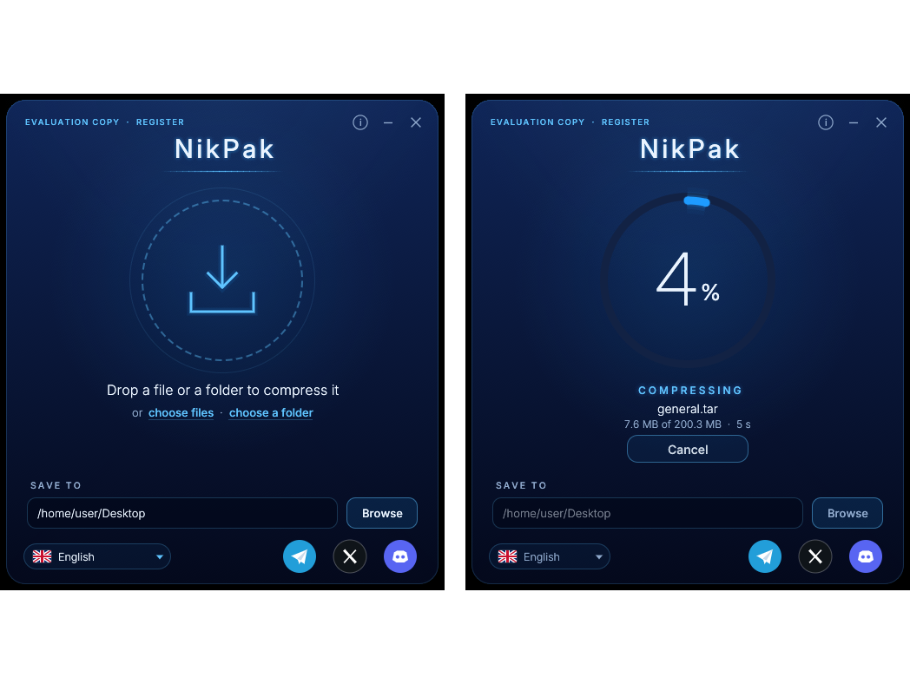
- أفلِت ملفاً أو مجلداً، أو عدة عناصر دفعة واحدة، على النافذة، أو انقر الدائرة (أو الرابطين choose files / choose a folder) لاختيارها في مربع حوار؛ ويُظهر النقر على الدائرة الزرَّين Choose files وChoose a folder داخل الحلقة. تُضغَط العناصر بأفضل ضغط (-m5) في أرشيف واحد يُسمَّى باسم الملف (بدون امتداده) أو المجلد، أو باسم المجلد الذي جاءت منه عند وجود عدة عناصر. لا يُكتب فوق أرشيف موجود أبداً: يصبح report.nik هو report (2).nik.
- يُعرض التقدّم كنسبة مئوية كبيرة داخل عداد دائري، مع المرحلة (analysing وcompressing وfinishing)، والكمية المعالجة، والوقت. يوقف زر Cancel تحتها (أو مفتاح Esc) الضغط الطويل فوراً ويزيل الأرشيف غير المكتمل؛ وتبقى النافذة مفتوحة للعنصر التالي. إغلاق النافذة أثناء الضغط يفعل الشيء نفسه.
- تم: تتحول الحلقة إلى اللون الأخضر وتعرض اسم الأرشيف وحجمه مقابل الأصل والوقت. يفتح Show in folder الأرشيف في Explorer أو Finder أو مدير الملفات؛ ويبدأ Compress more (أو النقر على الدائرة) الأرشيف التالي.
- Save to: يمكن كتابة مجلد الوجهة في الأسفل أو اختياره بزر Browse. يُتذكَّر للمرة التالية (Windows: %APPDATA%\nikpak\settings.txt؛ macOS: ~/Library/Application Support/nikpak؛ Linux: ~/.config/nikpak). وفي المرة الأولى يكون سطح المكتب.
- المجتمع: تفتح الأزرار الدائرية الثلاثة أسفل اليمين صفحات nikpak على Telegram وX وDiscord (القسم 1.5).
- التبديل إلى unNik: يغلق الزر الدائري الذي يحمل سهماً للأعلى، يسار زر i، برنامج NikPak ويشغِّل unNik (القسم 3.9). بعد الضغط، يفتح هذا الزر ورابط Open in unNik على شاشة الإتمام الأرشيف الجديد فوراً. ويُعطَّل الزر أثناء الضغط.
- فتح مجلد الوجهة: يفتح زر المجلد الموجود بين حقل Save to وBrowse ذلك المجلد في Explorer أو Finder؛ وبعد الضغط يفتحه مع تحديد الأرشيف الجديد.
- الأصوات: نقرة خفيفة للأزرار والروابط والخيارات، وصوت قصير لكل إجراء (بدء العمل، النجاح، الخطأ، الإلغاء، تبديل البرنامج، مرور الملفات فوق النافذة). وهي مصنوعة من البرنامج نفسه، دون ملفات صوتية. يشغِّلها زر مكبر الصوت في شريط العنوان ويطفئها؛ وهي مفعَّلة افتراضياً، ويُشارَك هذا الاختيار مع unNik.
- اللغة: يفتح الزر أسفل اليسار، الذي يحمل علماً واسم اللغة بلغتها، قائمة باللغات العشر الأكثر تحدثاً في العالم (Ethnologue 2025): English و中文 (Mandarin Chinese) وहिन्दी (Hindi) وEspañol والعربية (Arabic) وFrançais وবাংলা (Bengali) وPortuguês وРусский (Russian) وBahasa Indonesia. اختيار إحداها يحفظها ويعيد تشغيل nikpak بتلك اللغة. في المرة الأولى، يتبع nikpak لغة Windows (أو النظام)، وإلا الإنجليزية. ويبقى سطر الأوامر بالإنجليزية.
- التشغيل كمسؤول: لا يسمح Windows بسحب الملفات من Explorer إلى برنامج يعمل كمسؤول. عند تشغيل nikpak.exe كمسؤول (على سبيل المثال من PowerShell مسؤول)، يعيد تشغيل نفسه مرة واحدة كمستخدم عادي عبر Explorer حتى يعمل السحب والإفلات. وإن تعذَّر ذلك، تعرض النافذة إشعاراً؛ فاختر الملفات بالأزرار بدلاً من ذلك.
- الحالة وحول: يعرض أعلى اليسار EVALUATION COPY · REGISTER (يفتح النقر مربع التسجيل) أو REGISTERED TO مع حامل الترخيص. يفتح زر i الصغير أعلى اليمين، بجانب التصغير والإغلاق، مربع About: الإصدار، و© 2026 Nicolas Choukroun، من توزيع Nikkoid LLC، وحالة الترخيص، والموقع الإلكتروني، وشروط الترخيص (LICENSE.txt).
تبلغ أبعاد النافذة 500 × 560 نقطة (نحو 9:10)، بحيث تناسب لقطة شاشة للنافذة كاملة منشور صور على X (Twitter) دون قصّ. وهي بلا إطار: اسحبها من منطقتها العلوية؛ وتفتح الأزرار أعلى اليمين مربع About وتصغِّرها وتغلقها. عند تشغيل nikpak.exe من Explorer، تُغلَق نافذة الطرفية التي يفتحها Windows له تلقائياً؛ أما عند تشغيله من موجه أوامر فيُترك الموجه كما هو. وبدون شاشة رسومية (على سبيل المثال عبر SSH)، يطبع nikpak طريقة استخدامه كالمعتاد. تستخدم الواجهة egui/eframe وتضمّن مجموعات فرعية من خطوط Inter وNoto Sans SC وNoto Sans Devanagari وNoto Sans Bengali وNoto Sans Arabic (ترخيص SIL Open Font License، انظر assets/fonts/OFL.txt). ويُبنى ملف تنفيذي لسطر الأوامر فقط بالأمر cargo build --release --no-default-features.
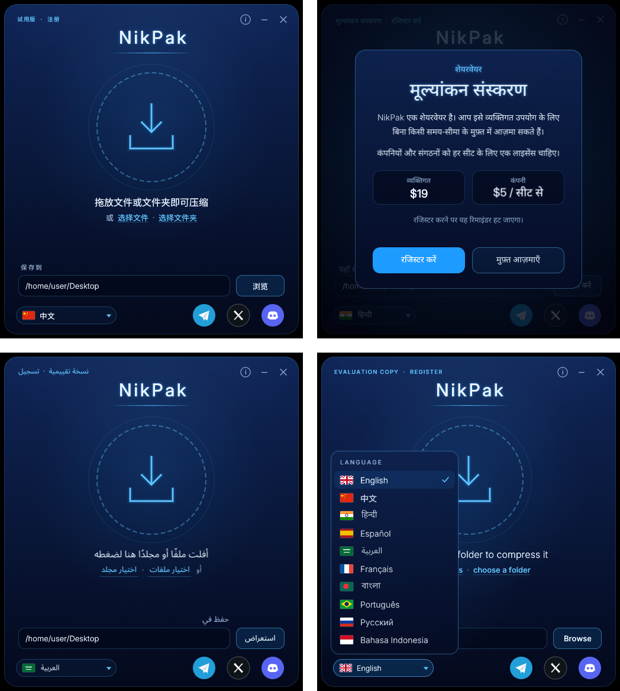
تحتاج اللغات الهندية والبنغالية والعربية إلى تشكيل (shaping): تتغير أشكال الحروف وتتصل ببعضها، وتتحرك علامات الحركات حول الحرف الساكن، وتُكتب العربية من اليمين إلى اليسار. يرسم egui محرفاً واحداً لكل حرف، ما سيطبع هذه اللغات بشكل خاطئ، لذلك يرتب nikpak هذه النصوص بخوارزمية Unicode ثنائية الاتجاه (unicode-bidi)، ويشكّلها بـrustybuzz (منقول Rust لـHarfBuzz)، وينقّطها بـab_glyph ويرسم النتيجة كصورة (textshape.rs). وتحتفظ الكلمات والأرقام اللاتينية داخلها بخط Inter. وتُصغَّر الترجمات الطويلة لتناسب أزرارها، وتنمو المربعات مع نصوصها. كُتبت الترجمات (i18n.rs) بمساعدة آلية؛ ومراجعة المتحدثين الأصليين مرحَّب بها.
3.8 الترخيص والتسجيل (برنامج shareware)
NikPak برنامج shareware، © 2026 Nicolas Choukroun، من توزيع Nikkoid LLC، ومرخَّص مثل WinRAR: الحزمة نفسها هي النسخة التجريبية المجانية، وبمجرد إدخال مفتاح ترخيص تصبح النسخة المسجَّلة. لا شيء معطَّل في النسخة التجريبية.
| مَن | الشروط |
|---|---|
| الأفراد | مجاني للاستخدام الشخصي غير التجاري، دون حد زمني. يزيل الترخيص الشخصي (19 دولاراً) التذكير؛ ويغطي جميع أجهزة الكمبيوتر التي يستخدمها حامل الترخيص. |
| الشركات والمؤسسات | ترخيص شركة واحد لكل مقعد، بعد فترة تقييم مجانية مدتها 40 يوماً؛ والمقاعد هي أجهزة الكمبيوتر أو المستخدمون، أيهما أكبر. أسعار الكميات لكل مقعد، على غرار WinRAR: 1–9 مقاعد بـ19 دولاراً، و10–24 بـ15، و25–49 بـ12، و50–99 بـ9، و100–199 بـ7، و200–499 بـ6، و500 فأكثر بـ5 دولارات. |
| التوزيع | يجوز وضع الحزمة غير المعدَّلة (مع LICENSE.txt وTHIRD-PARTY-NOTICES.txt) على أي موقع shareware أو موقع تنزيل؛ ويُحظر إضافة المفاتيح أو ملفات المفاتيح أو الكراكات. وأرشيفات .nik معفاة من الإتاوات. |
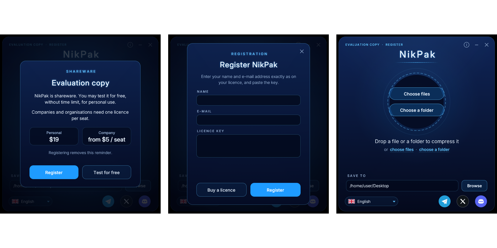
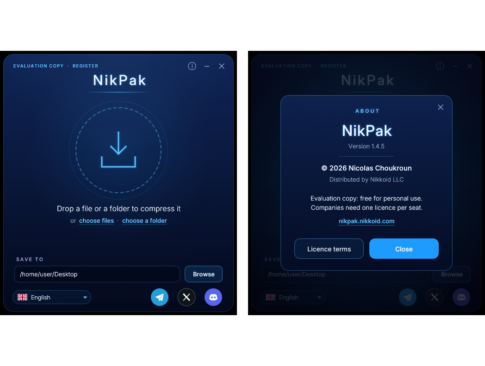
- يظهر التذكير عندما تفتح نسخة غير مسجَّلة نافذتها. وله زران، Register وTest for free، يتغير ترتيبهما الأيمن/الأيسر عشوائياً عند كل تشغيل. يغلقه Test for free (أو Esc)؛ ثم يعمل nikpak دون أي قيود.
- يطلب مربع التسجيل الاسم وعنوان البريد الإلكتروني ومفتاح الترخيص. يجب أن تتطابق الثلاثة: فالمفتاح توقيع للاسم والبريد الإلكتروني. لا يهمّ اختلاف حالة الأحرف ولا المسافات الزائدة ولا الأحرف المتشابهة O/0 وI/L/1. يفتح Buy a licence الرابط https://nikpak.nikkoid.com/buy.php.
- بمجرد التسجيل لا يسأل nikpak مرة أخرى على ذلك الجهاز لذلك المستخدم. يُخزَّن الترخيص في %APPDATA%\nikpak\license.txt (macOS: ~/Library/Application Support/nikpak؛ Linux: ~/.config/nikpak). ويمكن للشركة بدلاً من ذلك وضع ملف
nikpak.keyبجانب nikpak.exe، فيسجِّل كل مستخدمي ذلك الجهاز. - سطر الأوامر: يسجِّل الأمر
nikpak register "Jane Doe" jane@example.com NPK1-…؛ ويعرضnikpak licenseالحالة؛ ويزيلnikpak unregisterالترخيص. ويعرضnikpak -Vوnikpak -helpالحالة أيضاً. وتطبع النسخ غير المسجَّلة سطر إشعار تقييم واحد على مخرجات الخطأ (stderr)، وليس على المخرجات القياسية أبداً؛ ويكبتها -q.
كيف تعمل المفاتيح
يقرأ مفتاح الترخيص بصيغة NPK1- متبوعاً بـ108 أحرف في مجموعات من خمسة (Crockford base32). ويحتوي على نوع الترخيص (شخصي أو شركة)، وعدد المقاعد، وتوقيع Ed25519 على NIKPAK-LICENSE-1 والنوع والمقاعد والاسم وعنوان البريد الإلكتروني، كل منها مُطبَّع (المسافات مدموجة، أحرف صغيرة). يحتوي nikpak على المفتاح العام البالغ 32 بايتاً فقط، في src/license_pubkey.rs، لذا لا تتيح دراسة البرنامج لأي شخص صنع المفاتيح.
تُصنع المفاتيح بالمفتاح الخاص، الذي لا يغادر Nikkoid LLC أبداً: إما بالأداة الخاصة nikpak-keygen (cargo run --release --features keygen --bin nikpak-keygen -- make --name "Jane Doe" --email jane@example.com؛ و--company --seats 25 للشركات؛ وينشئ newkeys زوج مفاتيح جديداً) أو على خادم الويب بأدوات PHP في server/ (PHP 7.2+ وMySQL 5.7)، التي تصدر مفتاحاً واحداً لكل عملية دفع وتنتج المفاتيح نفسها تماماً. يصف server/README.md الإعداد وسير الدفع.
3.9 unNik، متصفح الأرشيف المجاني
unNik (unNik.exe) هو البرنامج الثاني في الحزمة. يفتح أرشيفات .nik ويعرض ما بداخلها ويستخرج ما تختاره. وهو مجاني للجميع، بما في ذلك الشركات، دون تسجيل ودون تذكير (LICENSE.txt، القسم 2a). يثبِّته برنامج الإعداد بجانب nikpak.exe، ويضيفه إلى قائمة Start ويجعله البرنامج المسؤول عن ملفات .nik، بحيث يفتح النقر المزدوج على أرشيف في unNik؛ ويفعل unNik archive.nik الشيء نفسه من موجه الأوامر.
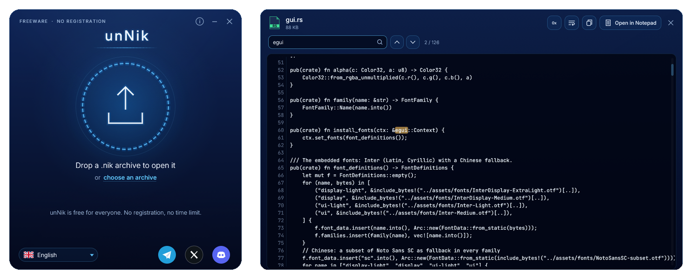
تبدو النافذة الفارغة تماماً مثل نافذة NikPak، مع سهم متجه للأعلى في الحلقة. أفلِت أرشيف .nik عليها، أو انقر الحلقة، أو اختر أحد الأرشيفات الحديثة: تتوسع النافذة لتصبح المتصفح (1120 × 720، قابل لتغيير الحجم من حوافه، ويمكن تكبيره). تطلب الأرشيفات المشفرة كلمة مرورها أولاً.
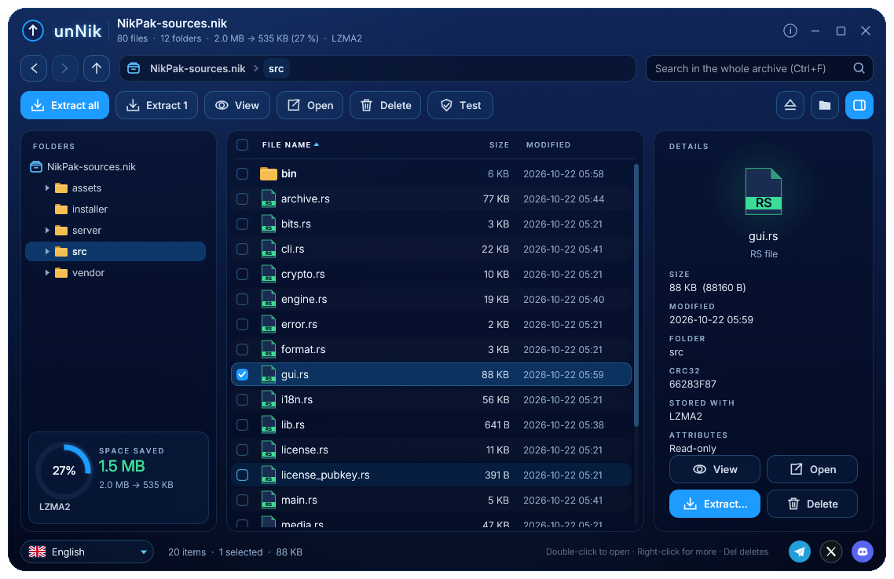
- التنقل بشجرة المجلدات ومسار التنقل (breadcrumbs) وBack وForward وUp (Alt+Left وAlt+Right وBackspace) والنقرات المزدوجة. يعثر Search (Ctrl+F) على الملفات بالاسم في الأرشيف كله؛ ويعرض كل نتيجة مجلدها.
- التحديد بالنقر، أو Ctrl+نقر، أو Shift+نقر، أو مربعات الاختيار، أو Ctrl+A، أو مفاتيح الأسهم. انقر عنوان عمود للفرز حسب الاسم أو الحجم أو النوع أو التاريخ. ويفتح النقر الأيمن قائمة بكل الإجراءات.
- استخراج الكل، أو التحديد (Ctrl+E): اختر الوجهة (افتراضياً مجلد باسم الأرشيف، بجانبه)، واحتفظ بالمجلدات أو لا، وما الذي يجب فعله عند وجود ملف مسبقاً: استبداله، أو الاحتفاظ بكليهما (name (1).ext)، أو تخطيه. تُنشأ الملفات المأخوذة من داخل مجلد بدون مسار ذلك المجلد، كما في WinRAR. وتتوقف القراءة مباشرة بعد آخر ملف مختار.
- العرض (F3، أو النقر المزدوج على ملف نصي): نص مع أرقام الأسطر، وبحث مع تمييز، والتفاف الأسطر، والنسخ؛ والملفات الثنائية بالنظام الست عشري. تُعرض أول 16 MB؛ ويفتح Open in Notepad الملف كاملاً. ويشغِّل Open الملف ببرنامجه الخاص (يُستخرج إلى مجلد مؤقت أولاً).
- يزيل Delete (Del) الملفات والمجلدات من الأرشيف بعد تأكيد. ولأن الأرشيف solid، يُعاد كتابته بدونها في ملف مؤقت لا يحل محل الأصل إلا عند نجاح كل شيء. تحتفظ الأرشيفات المشفرة بكلمة مرورها؛ وتحتفظ العناصر الأخرى بمرشِّح الوسائط أو Deflate ومحرك -m5 الخاص بها.
- يفك Test ضغط الأرشيف كله ويفحص كل ملف. ويعرض جزء details الحجم والتاريخ والمجلد وCRC32 وكيفية تخزين الملف وسماته؛ وبالنسبة للأرشيف نفسه يعرض حجمه وطريقته وتشفيره. ويعرض الملخص تحت الشجرة المساحة الموفَّرة.
- اللغات العشر نفسها، وزر اللغة، ومربع About (i)، وأزرار المجتمع كما في NikPak. وتُرسَم أسماء الملفات بأي نظام كتابة بخطوط النظام كخيار احتياطي.
- التبديل إلى NikPak: يغلق الزر الدائري الذي يحمل سهماً للأسفل، يسار زر i، برنامج unNik ويشغِّل NikPak. يوجد البرنامجان في المجلد نفسه. ويتشاركان ملف إعدادات واحداً، لذا تُستخدم اللغة المختارة في أحدهما في الآخر، وتتبع النافذة المفتوحة التغيير خلال ثانيتين.
- فتح مجلد الوجهة: يفتح الزر يسار زر الإخراج مجلد آخر عملية استخراج في Explorer أو Finder (وقبل أي استخراج، مجلد الأرشيف). يشغِّل unNik الأصوات نفسها التي يشغلها NikPak، مع أصوات لفتح الأرشيف والاستخراج والحذف والاختبار؛ ويتشارك زر مكبر الصوت خاصته مع زر NikPak في إعداد واحد.
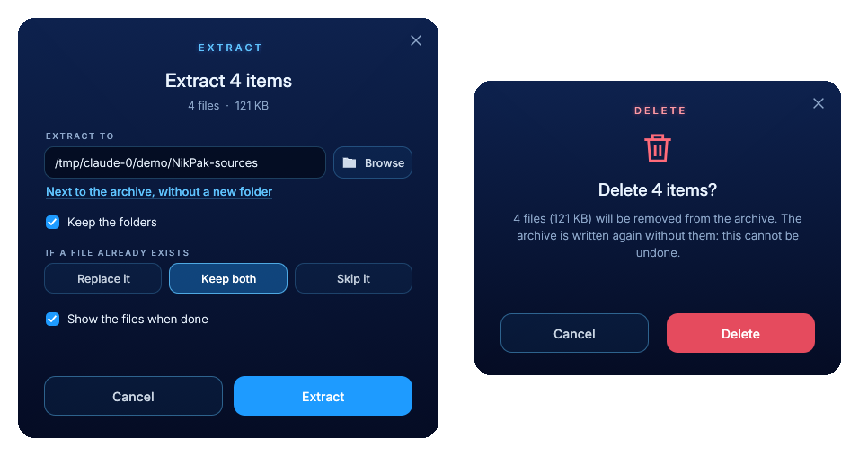
3.10 الواجهات الجلدية
يتشارك NikPak وunNik الواجهات الجلدية الـ55 نفسها للنافذة: واجهات Nikkomander الـ41 — من Nikkoid Blue (الافتراضية) وNikkoid Bright إلى Dracula وNord وSolarized وClassic Blue وMatrix وPizza وChristmas و8-Bit Game — إضافة إلى 14 واجهة مرسومة يرسم خلفياتها البرنامج نفسه: Moon وAmerica وPattaya Neons وBurgers Tokyo وSushi وAmiga وMSX وColecovision وZX Spectrum وCat Life وDog Life وMario Bros وCounter Strike وChess.
- زر الواجهات الجلدية (لوحة ألوان، في شريط عنوان البرنامجين): يفتح قائمة الواجهات، حيث تُرسم كل واجهة بألوانها. يُظهر التمرير فوق واجهة معاينتها على النافذة كاملة؛ والنقر عليها يثبّتها؛ ويعيد Esc أو النقر خارجها إلى الواجهة التي كانت لديك.
- يبدِّل زر الشمس/القمر بجانبه بين Nikkoid Blue (الداكنة) وNikkoid Bright بنقرة واحدة.
- يقف صندوق الواجهات الجلدية خارج البرنامج. أثناء فتح الصندوق تتسع النافذة بعرض الصندوق إلى اليمين: يحتفظ البرنامج بلوحته 500 × 560 ويجلس الصندوق في المساحة الشفافة الإضافية بجانبها، بحيث تبقى الواجهة كاملة مرئية خلف الواجهة قيد التجربة. يمكن سحب الصندوق من شريط عنوانه مرة أخرى فوق البرنامج أو إلى أي مكان آخر في النافذة، وله زرا Apply Skin وCancel. تجرِّب النقرة على واجهة معاينتها على النافذة كاملة؛ ويحتفظ Apply بها ويحفظها للبرنامجين؛ ويعيد Cancel (أو Esc أو ×) إلى الواجهة التي كانت لديك. لم يعد النقر على البرنامج يغلق الصندوق. ولا تتسع نافذة unNik.
- تُحفَظ الواجهة المختارة (
skin=في ملف الإعدادات) وتُشارَك: الواجهة المختارة في أحد البرنامجين يأخذها الآخر خلال ثانيتين. - واجهاتك الخاصة: يقرأ “Import a skin…” أسفل القائمة ملف Nikkomander
.skin.json(اسماً وقائمة ألوان) وينسخه إلى مجلدskinsبجانب ملف الإعدادات؛ ويزيل علامة × الموجودة على بلاطة الواجهة المستوردة تلك الواجهة. - تتراجع الواجهات المرسومة خلف الواجهة. تُرسم الخلفيات المرسومة بواسطة
src/skin_scenes.rs، لا بتدرجات CSS، لذا تتكيف مع أي حجم نافذة. ومنذ الإصدار 1.6.2 تمر كل واحدة بتمريرةdiscreet()فيsrc/skin.rs: يُسحب الرسم نحو متوسطه المحلي، ويُموَّه قليلاً ويُمحى تدريجياً نحو لون خلفية الواجهة — أكثر ما يكون خلف حلقة الإفلات وعمود النص، وأكثر قليلاً فوق الشعار — بحيث يبقى العنوان والحلقة ونص الحالة واضحين على الواجهات الأربع عشرة.
3.11 قائمة مدير الملفات
قائمة فرعية “NikPak” في قائمة النقر الأيمن لمدير الملفات، مثل قائمة WinRAR، يثبِّتها برنامج الإعداد (Windows: خيار مُفعَّل افتراضياً؛ Linux: nikpak --install-menu؛ macOS: إجراءات Finder السريعة).
- على الملفات والمجلدات: Add to archive… (يطلب الاسم والمجلد، ثم يضغط في نافذة NikPak) وAdd to archive here (يوضع الأرشيف بجانب العناصر، باسم مثل الإفلات على النافذة).
- على أرشيفات .nik: Open with unNik وExtract files… وExtract here وExtract to its own folder.
- تذهب عدة عناصر إلى أرشيف واحد؛ وتُستخرج عدة أرشيفات محددة واحداً تلو الآخر في نافذة واحدة.
- تعمل الأوامر عبر unNik.exe، فلا تومض نافذة طرفية؛ وتتبع التسميات لغة NikPak. يعرض Windows 10 القائمة الفرعية مباشرة، وWindows 11 ضمن Show more options (Shift+F10)؛ ويضيف Linux قوائم خدمات KDE Dolphin وإجراءات Nemo وسكربتات Nautilus، ويضيف macOS إجراءات Finder السريعة.
- خيارات سطر أوامر جديدة تستخدمها القائمة:
nikpak --addو--add-here(لضغط العناصر المعطاة)، وnikpak --install-menuو--uninstall-menuو--all-users؛ وunNik --extractو--extract-hereو--extract-to. يعرض Extract here / to its own folder نافذة unNik الصغيرة مع حلقة التقدم (مربع كلمة المرور للأرشيفات المشفرة) ويغلقها عند استخراج كل شيء؛ وتبقى التحذيرات والأخطاء على الشاشة. - برنامج إعداد ثانٍ،
unnik--setup.exe، يثبِّت unNik وحده (المتصفح المجاني) لمن يستقبلون أرشيفات .nik فقط؛ وعندما يكون NikPak مثبتاً بالفعل فإنه يثبِّت البرنامج فقط، فلا تتكرر القوائم أبداً.
3.12 الحزم: إنشاء حزمة وفتح حزمة
الحزمة ملف .nik يمثل منتجاً لا أرشيفاً. فهي تجمع ملفات ومجلدات، واسماً، ومؤلفاً، ووصفاً، وصورة غلاف، وكلمة مرور، واتفاقية ترخيص المستخدم النهائي في ملف واحد يمكن تسليمه إلى عميل أو بيعه. وهي النظير في NikPak لبنك أصوات Nikkosynth: الشكل نفسه، بتوقيع سحري مختلف، لذا لا تُستورد حزمة أبداً في Nikkosynth ولا يُفتح بنك أصوات أبداً كحزمة (القسم 5.7).
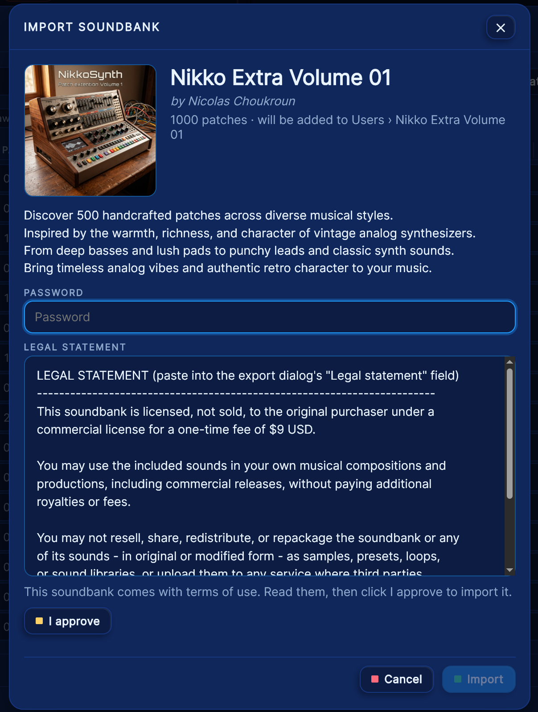
الصندوقان في نافذة NikPak؛ ويفتح unNik الحزم بالصندوق الثاني منهما.
- إنشاء حزمة — الزر الحبّي (pill) أعلى النافذة، في الصف نفسه مع سريع / متوسط / أفضل، و§ الشروط القانونية و▣ الغلاف. يطلب صندوق واحد كل شيء: اسم الحزمة، والمؤلف، والوصف، وكلمة المرور مرتين، وEULA اختيارية، وصورة غلاف مربعة، ومجلد الوجهة، والملفات المراد حزمها. انقر إطار الصورة لاختيار غلاف (أو أفلِت صورة على النافذة)، واختر ملفات أو مجلداً في الصندوق — أو أفلِتها على النافذة وهي مفتوحة: الصورة تصبح الغلاف، وأي شيء آخر يُضاف إلى القائمة.
- يُتذكَّر بين التشغيلات — يُحفظ المؤلف، ونص EULA ومفتاح تفعيله، ومجلد الوجهة في ملف الإعدادات (
package_author، وpackage_eula_on، وpackage_dest، وpackage-eula.txtبجانبها)، لذا لا تحتاج الحزمة الثانية إلا إلى اسم وملفاتها وكلمة مرور. - الملف —
<name>.nikفي مجلد الوجهة، أو<name> (2).nikعندما يكون ذلك الاسم مستخدماً. كلمة المرور إلزامية: تُشفَّر بها الملفات وأسماؤها وأحجامها وتُضغط بـZstandard. وعند كتابة الحزمة تعرض النافذة حلقتها الخضراء المعتادة مع الحجم قبل وبعد. - فتح حزمة — أفلِت حزمة على NikPak أو على unNik، أو افتحها من مدير الملفات. قبل فك تشفير أي شيء يعرض صندوق الغلاف، والاسم، والمؤلف، وعدد الملفات، والوصف؛ ثم EULA، الذي يجب قراءته والموافقة عليه بزر «أوافق»؛ ثم كلمة المرور ومجلد الوجهة. والوجهة هي مجلد الوجهة المتذكَّر نفسه المستخدم في إنشاء حزمة.
- الاستخراج — يُكتب كل ملف مع مجلداته، ويُتحقق من CRC32 الخاص به، وتُرفض أسماء العناصر غير الآمنة (القسم 10.1)؛ ويمكن فتح مجلد الوجهة عند انتهاء العمل. وعندما تحمل الحزمة EULA يُكتب في المجلد باسم
Terms of use.txt، لتنتقل الشروط مع الملفات. - الأمر نفسه من سطر الأوامر — الحزمة المُسلَّمة إلى nikpak تُسمَّى بدلاً من أن تُرفض: «This is a NikPak package (500 files, by …), not a NikPak archive. Open it with unNik or NikPak to unpack it.»
- لا تُخلط مع — الأرشيف (الفصل 5) حاوية عامة، والحزمة منتج يرافقه ترخيص، وبنك أصوات Nikkosynth بنك من الرقع (patches). وتُميَّز الثلاثة بأول ثمانية بايتات منها (القسم 5.7).
3.13 تقسيم الأرشيف إلى أجزاء وملف .exe ذاتي الاستخراج
منذ 1.12 يمكن تسليم الأرشيف كمجموعة أجزاء أو كملف .exe واحد ذاتي الاستخراج، بالطريقة التي يعرفها مستخدمو WinRAR. وكلاهما للتوزيع — وضع الأرشيف على أقراص، أو تحت حد للرفع، أو بين يدي شخص لا يملك أي شيء مثبَّتًا — وكلاهما متاح للنسخ المسجلة فقط.
- تقسيم إلى أجزاء.
-v<size>(أو زر Split في النافذة) يقطع تدفق بايتات الأرشيف إلى أجزاء بالحجم المحدد — 100 MB أو 700 MB أو 1 GB أو 2 GB أو 4.7 GB، أو عددًا مكتوبًا من الميجابايت أو الجيجابايت. الجزء الأول هوphotos.nik، ثمphotos.n01،photos.n02… لفك الضغط، استخرج الجزء الأول: يتبع القارئphotos.n01،photos.n02… من تلقاء نفسه. الجزء الممتلئ تمامًا يحصل على جزء لاحق فارغ، وهو ما يجعل القارئ يميز “يتبعه آخر” عن “الأخير”. - ذاتي الاستخراج.
-sfxيكتبphotos.exe— أي unNik مع الأرشيف الملحق به، بالإضافة إلى لاحقة صغيرة. من يشغّله يحصل على نافذة صغيرة (الاسم والحجم وعدد الأجزاء وحقل الاستخراج إلى وكلمة المرور عند التشفير وشروط للموافقة عليها وزر Extract واحد) تفك الضغط دون أي شيء مثبَّت ودون الحاجة إلى nikpak.-vو-sfxمعًا يعطيانphotos.exeبالإضافة إلىphotos.n01… - للنسخ المسجلة فقط. تقسيم الأرشيف إلى أجزاء وملف .exe هما الميزتان اللتان تجعلان الأرشيف وسيلة توزيع، لذلك لا تكتبهما النسخة التجريبية. يفتح زر Split مربع التسجيل بدلاً من ذلك، ويُرفض
-v/-sfxفي سطر الأوامر قبل كتابة أي شيء. - أفلِت أرشيفًا لاستخراجه. منذ 1.13.1 يفتح أرشيف
.nikالمُفلَت على النافذة — أو أي جزء من مجموعة مقسمة، أو ملف .exe ذاتي الاستخراج — مربع الاستخراج (الاسم والحجم والأجزاء وكلمة المرور والوجهة) بدلاً من ضغطه.
4 البنية
nikpak برنامج Rust واحد من نحو 9,600 سطر (بما في ذلك اختبارات الوحدة) موزع على ستة عشر ملفاً مصدرياً، إضافة إلى أداة الترخيص الخاصة nikpak-keygen. قاعدته التصميمية المركزية هي التدفق (streaming): تُقرأ الملفات قطعاً بحجم 256 KiB، وتُدفع عبر سلسلة من الكاتبات، ولا تُحتفَظ في الذاكرة كاملة أبداً (الاستثناءان الوحيدان هما بيانات بكسل BMP، المحدودة بـ256 MiB، ومخازن العمل المؤقتة بحجم 64 KiB الخاصة بالمرمّزات).
4.1 تدفق البيانات عند إنشاء أرشيف
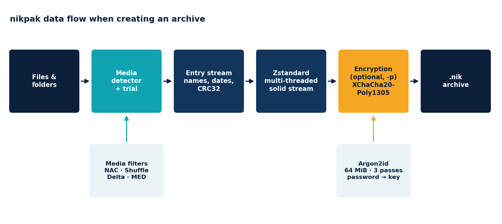
كل مرحلة هي تنفيذ لواجهة Write القياسية ملفوفة حول التالية، بحيث يخدم مسار الكود نفسه أرشيفاً عادياً وأرشيفاً مشفراً وتجربة الوسائط.
4.2 خريطة الكود المصدري
| الملف | المسؤولية |
|---|---|
main.rs | نقطة الدخول. يحلل الوسائط، ويوجِّه الأمر، ويحوِّل الأخطاء إلى أكواد خروج. ويتعامل مع أنبوب مغلق بهدوء (nikpak lb x | head). |
cli.rs | محلل وسائط مكتوب يدوياً بنمط RAR/zip، وجداول الخيارات، ونص -help الكامل. لا تستطيع مكتبات نمط Clap التعبير عن مفاتيح التبديل مثل -pSECRET أو -m5 بشكل نظيف. |
archive.rs | الإنشاء، والعرض، والاختبار، والاستخراج (بالمرشِّحات أو باختيار دقيق)، والحذف، والطباعة، واختبار الوسائط؛ وكذلك الفهرس وقراءة الملف الواحد التي يستخدمها unNik. ويحتوي على كاتب وقارئ تدفق العناصر، وسياسة الكتابة فوق، ومنطق الملف المؤقت الذرّي. |
media.rs | اكتشاف المحتوى لملفات WAV وAIFF وMOD وBMP؛ ومرشِّحات Shuffle وDelta وMED؛ واختيار التجربة؛ ومساعدات CRC وتأطير المقاطع. |
nac.rs | مرمّز NAC الصوتي بلا فقدان: إزالة ارتباط الستيريو، والمتنبئات، وترميز البواقي. |
bits.rs | كاتب وقارئ بتات بترتيب البت الأكثر أهمية أولاً (MSB-first) يستخدمهما NAC. |
crypto.rs | اشتقاق مفتاح Argon2id وكاتب وقارئ مقاطع XChaCha20-Poly1305. |
format.rs | ثوابت صيغة التخزين على القرص: التوقيع السحري، والإصدارات، وأنواع السجلات، وحدود KDF. |
package.rs |
NikPak packages (a .nik with the
NIKPACK2 magic): collecting the files, the header, sealing,
and extracting. The readable header is what the Open Package box shows
before the password. |
util.rs | المطالبة بكلمة المرور وتوليدها، وتنظيف المسارات، ومطابقة أحرف البدل، وتنسيق التاريخ والحجم. |
error.rs | نوع الخطأ، وأكواد خروجه، وتصنيف أخطاء الإدخال/الإخراج (الفساد مقابل عطل النظام). |
engine.rs | الجسم متعدد المحركات لـ-m5: كاتب وقارئ الكتل، ومحركا LZMA2 وPPMd، وتجربة المحركات (القسمان 5.6 و6.7). |
recomp.rs | إعادة ضغط Deflate لحاويات ZIP وPDF وgzip باستخدام preflate (القسم 7.9). |
gui.rs | الواجهة الرسومية: نافذة الإفلات، وحلقة التقدم، وإعداد الوجهة، وروابط المجتمع (القسم 3.7). |
unnik.rs | unNik، متصفح الأرشيف: الشجرة، والقائمة، والبحث، والعارض، ومربعا الاستخراج والحذف (القسم 3.9). |
lib.rs, bin/unnik.rs | المكتبة المشتركة بين nikpak وunNik، ونقطة دخول unNik.exe (برنامج نافذة، بلا طرفية). |
license.rs | ترخيص shareware: صيغة المفتاح، والتحقق من Ed25519، وتخزين الترخيص، والتسجيل (القسم 3.8). |
i18n.rs | ترجمات النافذة إلى اللغات العشر الأكثر تحدثاً؛ وإعداد اللغة (القسم 3.7). |
textshape.rs | النص المشكَّل للهندية والبنغالية والعربية: الترتيب ثنائي الاتجاه، والتشكيل، والتنقيط (القسم 3.7). |
split.rs | تقسيم الأرشيف إلى أجزاء وملف .exe ذاتي الاستخراج: قارئ Chain الذي يتبع .n01 …، وكاتب Out الذي يقطع تدفقًا إلى أجزاء أو ملف .exe، ولاحقة SFX. |
4.3 إنشاء أرشيف خطوة بخطوة
- التحقق من موقع الإخراج. لا يُستبدل أرشيف موجود إلا مع
-o+(أو نعم تفاعلية)؛ وإلا يوضح nikpak أن الإلحاق غير مدعوم. - جمع الإدخال: تُوسَّع أحرف البدل (PowerShell لا يفعل ذلك)، وتُقرأ ملفات
@listfiles، وتُطبَّق الاستثناءات، ويُتخطَّى الروابط الرمزية والملفات الخاصة مع تحذير، ولا يُضاف الأرشيف إلى نفسه أبداً. - تحديد كلمة المرور إذا طُلب التشفير (القسم 3.3) واشتقاق المفتاح باستخدام Argon2id.
- كتابة الترويسة، ثم بناء سلسلة الكاتبات: الملف، وكاتب مؤقت (buffered)، ومشفِّر المقاطع الاختياري، ومشفِّر Zstandard.
- كتابة كل عنصر. تمر ملفات الوسائط عبر الاكتشاف والتجربة (الفصل 7)؛ ويُنسخ كل شيء آخر قطعاً بحجم 256 KiB مع حساب CRC32.
- كتابة علامة النهاية مع عدد العناصر، وإنهاء إطار Zstandard، وختم المقطع المشفر الأخير، والتفريغ إلى القرص.
- إعادة تسمية
name.nik.tmpإلىname.nik. إذا فشل أي شيء قبل ذلك، يحذف كائن حارس الملف المؤقت، فلا يستبدل أرشيف ناقص الكتابة أرشيفاً سليماً أبداً.
4.4 استخراج أرشيف خطوة بخطوة
- قراءة الترويسة والتحقق منها: التوقيع السحري، والإصدار، والأعلام، والطريقة، وبالنسبة للأرشيفات المشفرة معاملات Argon2id، التي تُفحص نطاقاتها قبل تخصيص أي ذاكرة.
- الحصول على كلمة المرور واشتقاق المفتاح. ثم يثبت المقطع الموثَّق الأول صحة كلمة المرور أو ينفيها.
- اجتياز تدفق العناصر. يُنظَّف اسم كل عنصر (القسم 10.1) قبل أي وصول إلى نظام الملفات.
- كتابة الملفات باستخدام
create_new، وتعيين الطوابع الزمنية والصلاحيات، والتحقق من CRC32 للبايتات المُعاد بناؤها. ويُحذف الملف الذي يفشل في CRC بدلاً من الإبقاء عليه. - التحقق من نهاية الأرشيف: بعد علامة النهاية يجب أن ينتهي التدفق فعلاً، وإذا كان مشفراً يجب أن يكون المقطع الموثَّق الأخير قد عُولج. وهذا يكشف البتر والبيانات الملحقة.
4.5 الذاكرة والخيوط
يستخدم Zstandard خيوط عمل للضغط (كل الأنوية افتراضيًا، و-mt<N> للتقييد). منذ 1.13 يعمل المستوى الأقصى أيضًا بالتوازي: يقطع -m5 العناصر الثنائية والنصية إلى كتل متوازنة — كتلة لكل نواة، لا تقل أبدًا عن 8 MiB — ويضغط كل كتلة على خيطها الخاص، بينما يُنفَّذ العمل الخاص بكل ملف (تجارب الوسائط وإعادة ضغط Deflate) على مجموعة من خيوط العمل عند كل مستوى. ذاكرة المرمّز محدودة بـENCODER_RAM_BUDGET (1.5 GiB): مزيد من الكتل يعني قاموس LZMA2/PPMd أصغر. يعيد NIKPAK_SEQ=1 المسار واحدًا تلو الآخر. يعمل فك الضغط ومرمّز الصوت والتشفير على خيط الاستدعاء؛ ويحتاج Argon2id إلى 64 MiB لاشتقاق المفتاح، وتستخدم المستويات العليا نافذة مطابقة بحجم 128 MiB.
5 صيغة الحاوية .nik
ملف .nik هو ترويسة ثابتة صغيرة يتبعها جسم. والجسم تدفق واحد solid: تُدمج جميع العناصر وتُضغط معاً وتُشفَّر اختيارياً. يضيف الإصدار 2 من الصيغة سجلات الوسائط؛ وتبقى أرشيفات الإصدار 1 قابلة للقراءة.
5.1 الترويسة
| الإزاحة | الحجم | الحقل | ملاحظات |
|---|---|---|---|
| 0 | 8 | التوقيع السحري | 89 4E 49 4B 0D 0A 1A 0A (فكرة PNG: يكتشف تلف النقل في وضع النص) |
| 8 | 1 | الإصدار | 3 (الإصداران 1 و2 ما زالا قابلين للقراءة) |
| 9 | 1 | الأعلام | bit 0 = مشفّر، bit 1 = بيان قانوني، bit 2 = غلاف؛ ويجب أن تكون البتات الأخرى 0 |
| 10 | 1 | الطريقة | 0 = store، و1 = Zstandard، و2 = كتل متعددة المحركات (5.6) |
| 11 | 1 | محجوز | 0 |
| 12 | 4 | ذاكرة Argon2id (KiB) | الأرشيفات المشفرة فقط، بترتيب little endian |
| 16 | 4 | تمريرات Argon2id | المشفر فقط |
| 20 | 4 | حارات Argon2id | المشفر فقط |
| 24 | 16 | الملح (Salt) | عشوائي لكل أرشيف، المشفر فقط |
| 40 | 19 | بادئة nonce التدفق | عشوائي لكل أرشيف، المشفر فقط |
يُوثَّق الترويس الكامل (12 بايت، أو 59 بايت عند التشفير، إضافة إلى البيان القانوني والغلاف إن وُجدا) لاحقًا كبيانات مرافقة لكل كتلة مشفّرة، فلا يمكن تعديله دون اكتشاف ذلك.
البيان القانوني (البت 1 من الأعلام). بعد الحقول الثابتة يأتي طول من 4 بايت ثم البيان بترميز UTF-8، بحد أقصى 64 كيلوبايت. يُخزَّن نصًا صريحًا ليتمكن البرنامج من عرضه قبل طلب كلمة المرور، ويرفض nikpak عرض أي شيء أو اختباره أو استخراجه أو حذفه حتى يُقبل: في نافذة عبر أوافق، أو في الطرفية بكتابة YES، أو باستخدام -accept. القارئ الذي لا يعرف البت 1 يرفض الأرشيف، فلا يمكن تجاوز البيان بإصدار أقدم.
الغلاف (البت 2 من الأعلام). ثم طول من 4 بايت وصورة JPEG أو PNG بحد أقصى 4 ميغابايت؛ ينشئها nikpak من أي صورة بعد قصها مربعة وتحجيمها إلى 1024 x 1024. تُقرأ دون كلمة المرور ويعرضها unNik وNikkomander.
كلاهما جزء من الترويس، لذا يُوثَّقان في الأرشيف المشفّر مع كل كتلة: تغيير الشروط أو الغلاف أو إزالتهما يمنع فتح الأرشيف. أما الأرشيفات التي لا تحتويهما فتُكتب تمامًا كما كانت.
5.2 سجلات العناصر
داخل التدفق (بعد فك التشفير وفك الضغط) يكون كل عنصر سجلاً. وجميع الأعداد الصحيحة بترتيب little endian.
| النوع | التخطيط |
|---|---|
0 END | count:u64. يعلّم النهاية ويحدد عدد العناصر التي تسبقه. |
1 FILE | name_len:u16 name mtime:i64 mode:u32 size:u64 data[size] crc32:u32 |
2 DIR | name_len:u16 name mtime:i64 mode:u32 |
3 MEDIA | name_len:u16 name mtime:i64 mode:u32 size:u64 filter:u8 method:u8 params_len:u8 params framed_stream crc32:u32 |
- الأسماء بصيغة UTF-8 مع فواصل
/، وبحد أقصى 4096 بايت. mtimeهو ثواني Unix؛ وmodeهو كلمة صلاحيات Unix (تحصل ملفات Windows على 0644 أو 0755، و0444 عندما تكون للقراءة فقط).- يغطي CRC32 دائماً البايتات الأصلية، وهو ما يجعل مرشِّحات الوسائط قابلة للتحقق.
- في سجل MEDIA يكون
sizeهو الحجم الأصلي. وframed_streamسلسلة من مقاطع[u32 length][bytes]تنتهي بطول صفري، لذا يستطيع القارئ دائماً تخطي عنصر وسائط دون فهم مرشِّحه.
معاملات الوسائط
| المرشِّح | المعاملات | المحتوى |
|---|---|---|
| 1 صوت | 19 بايتاً | offset:u64 frames:u64 channels:u8 bits:u8 flags:u8 (بت العلم 0 = big endian، وبت 1 = بإشارة signed) |
| 2 صورة | 21 بايتاً | offset:u64 width:u32 rows:u32 bpp:u8 stride:u32 |
| 3 Deflate | 0 بايت | none: the framed stream holds raw segments and recompressed Deflate streams (section 7.9) |
يُخزَّن كل شيء قبل offset (الترويسات والوسوم واللوحات وأنماط MOD) وكل شيء بعد منطقة العينات أو البكسلات (المقاطع اللاحقة) دون تغيير حول البيانات المفلترة.
5.3 تأطير الجسم المشفر
عند تعيين علم التشفير، يُقطَّع مخرج zstd إلى مقاطع بحجم 64 KiB من النص الصريح. يُخزَّن كل مقطع بطول 32 بتاً بترتيب big endian يليه النص المشفر، وهو أطول بـ16 بايتاً بسبب وسم Poly1305. لا يُختَم المقطع إلا عند وجود بايت واحد آخر على الأقل بعده، لذا لا يكون المقطع الأخير فارغاً أبداً ويمكن تعليمه كنهائي (القسم 8.3).
5.4 لماذا التدفق solid؟
ضغط جميع الملفات كتدفق واحد يتيح للضاغط إيجاد التكرارات بين الملفات، وهذا مهم للغاية لأشجار الكود المصدري ومجموعات المستندات (يُظهر الاختبار المعياري في الفصل 11 أن مخرج RAR غير solid أكبر من مخرجه solid بمرتين تقريباً على 10,949 ملفاً). الثمن هو الوصول المتسلسل: استخراج ملف واحد يتطلب فك ضغط ما يسبقه. ويقلل nikpak كلفة ذلك بالنسبة لعناصر الوسائط بتخطيها دون فك ترميزها.
5.5 التحكم في الإصدارات
يُفحص بايت الإصدار مقابل أعلى إصدار يفهمه البرنامج. ينتج الأرشيف الأحدث الرسالة Unsupported archive version N; please update nikpak بدلاً من خطأ فساد مضلل. وتُرفض الأعلام والطرق ومرشِّحات الوسائط غير المعروفة بالطريقة نفسها.
5.6 الجسم متعدد المحركات (الإصدار 3)
تستخدم الأرشيفات المصنوعة بـ-m5 الطريقة 2. لا يتغير تدفق السجلات الداخلي الموصوف في 5.2، لكنه يُقطَّع، بين العناصر فقط، إلى كتل، وتُضغط كل كتلة بمحركها الخاص. وعند دمجها، تكون الكتل بعد فك ضغطها هي تدفق سجلات أرشيف أحادي المحرك تماماً، لذا يعمل العرض والاختبار والاستخراج بالطريقة نفسها.
| العنصر | التخطيط |
|---|---|
| الجسم | كتلة* يتبعها بايت واحد قيمته 0 |
| كتلة | engine:u8 parameters، ثم إطارات [u32 length 1 .. 1 MiB][compressed bytes]، تنتهي بطول صفري |
| المحرك 1 | Zstandard (بدون معاملات) |
| المحرك 2 | تيار LZMA2 خام: dictionary size u32، وlc u8، وlp u8، وpb u8 |
| المحرك 3 | PPMd variant I (PPMd8): order u8، وmodel size u32، وrestore method u8 (0 = إعادة تشغيل) |
يتيح التأطير للقارئ إيجاد نهاية كل كتلة دون الوثوق بالمفكِّك، وتُفحص نطاقات كل معامل قبل تخصيص الذاكرة (قاموس LZMA2 بحد أقصى 1.5 GiB، ونموذج PPMd بحد أقصى 1 GiB، والرتبة من 2 إلى 16). وعند التشفير، يُحمى الجسم بالمقاطع الموثَّقة نفسها المستخدمة في أي أرشيف آخر (الفصل 8).
5.7 حاوية الحزمة (NIKPACK2)
إلى جانب الأرشيفات (هذا الفصل) وبنوك أصوات Nikkosynth، قد يكون ملف .nik حزمة NikPak (القسم 3.12). تشترك الثلاثة في الامتداد، لذا يتعرّف كل برنامج على الملف بأول ثمانية بايتات منه:
| Kind | First eight bytes | Written by |
|---|---|---|
| أرشيف NikPak |
89 4E 49 4B 0D 0A 1A 0A | nikpak؛ يقرأه unNik (الفصل 5) |
| حزمة NikPak |
NIKPACK2
(4E 49 4B 50 41 43 4B 32) | NikPak 1.11 وما بعده؛ يستخرجها unNik |
| Nikkosynth soundbank |
NIKPACK1
(4E 49 4B 50 41 43 4B 31) | Nikkosynth فقط |
تُبنى الحزمة وبنك الأصوات بالطريقة نفسها — سطر ترويسة JSON واحد بنص صريح، ثم جسم مختوم واحد — لكن التوقيع السحري المختلف هو ما يفصل المنتجين.
الترويسة سطر JSON واحد، مقروء عمداً دون كلمة المرور: فهي ما يعرضه صندوق فتح حزمة قبل طلبها. تحمل format («nikpak-package»)، وversion (1)، وname، وauthor، وdescription، وeula، وcover (بترميز base64 لصورة JPEG أو PNG بحجم 1024 × 1024) مع coverType، وcount، وencrypted، وعند التشفير salt وnonce بطول 16 بايتاً بالنظام الست عشري. لا شيء عن الملفات فيها: أسماؤها ومحتوياتها داخل الجسم. ولأن الترويسة جزء مما يغطيه الوسم، فإن حزمة عُدِّل EULA الخاص بها أو حُذف لم تعد تُفتح.
الجسم هو تدفق السجلات في القسم 5.2 — السجلات نفسها 1 FILE، و2 DIR، و0 END، بأحجام 64 بتاً، ووقت التعديل (mtime)، والنمط (mode)، وCRC32 لكل ملف — مضغوطاً كتدفق Zstandard واحد (المستوى 19). لا تحتوي الحزمة على سجلات MEDIA ولا على إعادة ضغط Deflate: تُخزَّن ملفاتها كما هي ويُضغط التدفق كله مرة واحدة، مما يُبقي الصيغة صغيرة بما يكفي لينفّذها المنتجان.
- المفتاح — SHA-256 مكرَّر 600,000 مرة على salt ‖ كلمة المرور، ويُقسَّم إلى مفتاح تشفير بطول 32 بايتاً ومفتاح تحقق بطول 32 بايتاً. نصف ثانية لكل تخمين، وهو ما يجعل مهاجمة حزمة مسروقة مكلفة.
- الجسم — XOR مع تدفق المفاتيح SHA-256(مفتاح التشفير ‖ nonce ‖ العدّاد)، 32 بايتاً في المرة.
- الوسم — HMAC-SHA-256 على سطر الترويسة والنص المشفَّر، 32 بايتاً في النهاية، ويُقارَن في زمن ثابت. تفشل كلمة المرور الخاطئة والملف التالف بالطريقة نفسها، لذا لا يمكن تمييز أحدهما عن الآخر.
- لماذا لا Argon2id وXChaCha20-Poly1305 — لأن الحزمة صيغة مشتركة: البناء نفسه هو ما تستخدمه بنوك Nikkosynth، ويجب أن يستطيع المنتجان تنفيذه في بضعة عشرات من الأسطر من كود المكتبة القياسية. إنها حاوية مختومة — كاتب واحد، وقارئ واحد، ولا رسائل يختارها المهاجم، وكلمة المرور لا تنتقل أبداً — وهذا ما يجب أن تكون عليه.
الحدود: الوصف 4 كيلوبايت، وEULA 64 كيلوبايت، والمؤلف 256 بايتاً، واسم الحزمة 256 بايتاً، والغلاف 4 ميغابايت، واسم العنصر 4096 بايتاً، والجسم 512 ميغابايت بعد فك الضغط (الملحق A).
5.8 تقسيم الأرشيف إلى أجزاء ولاحقة SFX
المجموعة المقسمة ليست صيغة ثانية: الأجزاء هي تدفق بايتات الأرشيف نفسه مقطوعًا عند حدود الحجم. ولا يعرف أي شيء في الصيغة عن التقسيم سوى علم واحد في الترويسة. الجزء الأول هو الأرشيف نفسه — ملف .nik كامل تحمل ترويسته حجم الجزء — والأجزاء الأخرى استمرارات خالصة.
الترويسة. البت 3 من الأعلام (FLAG_SPLIT) بالإضافة إلى حجم جزء بطول 64 بتًا بعد الغلاف. يكون حجم الجزء جزءًا من AAD عندما يكون الأرشيف مشفرًا، وهو ما يتيح للقارئ قول “يستمر الأرشيف في photos.n01، وهو مفقود” بدلاً من “أرشيف مبتور” عندما يضيع جزء. ترفض الإصدارات الأقدم الأرشيف، وهذا صحيح: فبدون الحجم تبدو المجموعة كملف تالف.
قارئ Chain. split::Chain هو نوع Read يبدأ من بداية الجزء الأول (أو من إزاحة داخل ملف .exe)، وعند بلوغ نهاية جزء يفتح التالي (photos.n01، photos.n02، …، ثم .100 …) ويواصل. يمر كل مسار قراءة في البرنامج عبره، لذلك يقرأ السرد والتصفح والاستخراج وقائمة النقر الأيمن كل جزء من المجموعة.
كاتب Out. split::Out هو الكاتب الذي يقف خلف -v و-sfx. يكتب ملفات ….tmp ويعيد تسميتها في finish()، فلا يترك التشغيل الفاشل جزءًا نصف مكتمل أبدًا. يكتب ملفًا واحدًا أو مجموعة أجزاء أو ملف .exe.
ذاتي الاستخراج. ملف .exe هو بايتات unNik.exe تليها بايتات الأرشيف ولاحقة من 40 بايتًا — التوقيع السحري NIKPAKSFX وإزاحة الأرشيف وطوله والحجم الإجمالي وCRC32. يبحث unNik عن هذه اللاحقة في ملفه التنفيذي نفسه عند بدء التشغيل، وعندما يجدها يعرض مربعًا صغيرًا بدلاً من نافذة الإفلات. يبلغ حجم ملف .exe نحو 8 MB بالإضافة إلى الأرشيف.
6 محرك الضغط
6.1 لماذا Zstandard
يجمع Zstandard بين مطابقة LZ77 ومرحلة إنتروبيا مبنية من ترميز Huffman وإنتروبيا الحالات المحدودة (FSE). وبالمقارنة مع خوارزمية Deflate الخاصة بـZIP، يجد المطابقات على نافذة أكبر بكثير، ويصمغ القيم الحرفية وأطوال المطابقة بأكواد إنتروبيا أضيق، ويفك الترميز بمعدل غيغابايتات في الثانية. وهو أيضاً صيغة مفتوحة وخاضعة لتدقيق واسع، ما يُبقي بيانات nikpak قابلة للاسترداد بأدوات مستقلة.
6.2 ربط المستويات
يقبل nikpak مستويات نمط RAR (-m0 .. -m5) ومستويات نمط zip (-0 .. -9) ويربطها بمستويات Zstandard:
| الخيار | مستوى Zstandard | الطابع |
|---|---|---|
-m0 | لا شيء (مخزَّن) | بدون ضغط، وبدون مرشِّحات وسائط |
-m1 | 1 | الأسرع |
-m2 | 3 | سريع؛ نحو 0.9 ثانية لـ197 MB على نواة واحدة (الافتراضي حتى الإصدار 1.2.0) |
-m3 | 9 | توازن جيد |
-m4 | 15 | عالٍ؛ نافذة 128 MiB ومطابقة المسافات الطويلة؛ وإعادة ضغط Deflate (7.9) |
-m5 (default) | LZMA2 / PPMd | الأقصى، والافتراضي منذ الإصدار 1.2.1: جسم متعدد المحركات (6.7) وإعادة ضغط Deflate |
تُربط مستويات نمط zip كما يلي: يخزِّن -0، وتستخدم -1 إلى -6 مستويات Zstandard من 1 إلى 6، ويستخدم -7 المستوى 9، و-8 المستوى 12، و-9 هو نفسه -m5.
6.3 النافذة الكبيرة ومطابقة المسافات الطويلة
عند مستوى Zstandard 15 فما فوق يفعِّل nikpak نافذة مطابقة بحجم 2^27 بايت (128 MiB) ومطابقة المسافات الطويلة. تحتوي أشجار الكود المصدري ومجموعات المستندات والنسخ الاحتياطية على العديد من الملفات شبه المكررة المتباعدة في التدفق؛ فلا تستطيع نافذة عادية بحجم 8 MiB الرؤية عبرها. على مجموعة الاختبار 197 MB قلَّص هذا المخرج عند -m5 من 26.3 MB إلى 24.4 MB وعند -m4 من 29.5 MB إلى 26.8 MB، دون كلفة في السرعة لـ-m4 وكلفة صغيرة لـ-m5. وتقع نافذة 2^27 ضمن حد المفكِّك الافتراضي لـZstandard، لذا يمكن لأي مفكِّك قياسي قراءة البيانات.
6.4 تعدد الخيوط
يقسم المرمّز المدخلات إلى مهام تعمل على خيوط عمل (كل الأنوية افتراضيًا). لذلك تتدرج سرعة الضغط مع عدد الأنوية، بينما تبقى الصيغة تدفقًا واحدًا. منذ 1.13، يقطع -m5 الأرشيف أيضًا إلى كتلة لكل نواة ويضغط الكتل بالتوازي (القسم 4.5)؛ ويعمل خط المعالجة الخاص بكل ملف عند كل مستوى. قِيسَت كل الأرقام في هذا الدليل على نواة واحدة؛ وعلى آلة متعددة الأنوية نموذجية يكون nikpak أسرع بكثير مما هو موضح.
6.5 السلامة داخل التدفق
يحمل إطار Zstandard مجموعاً اختبارياً خاصاً بمحتواه، ويضيف nikpak CRC32 لكل ملف وعلامة نهاية مع عدد العناصر. لذا يُكتشف الأرشيف العادي التالف على ثلاثة مستويات: المجموع الاختباري للإطار، وCRC لكل ملف، وعلامة النهاية.
6.6 وضع التخزين (store)
يكتب -m0 العناصر دون ضغط. وهو مفيد للبيانات المضغوطة مسبقاً، وهو أيضاً الوضع الوحيد الذي تُتجاوز فيه مرشِّحات الوسائط عمداً: فالمستخدم الذي يطلب store لا يتوقع تحويل البيانات.
6.7 المستوى الأقصى: LZMA2 وPPMd
Zstandard هو المحرك الصحيح للسرعة، لكن عند أقوى إعداداته يظل أقل ببضع نقاط مئوية من LZMA2 على الكود المصدري والمستندات، وأقل بوضوح من PPMd على النثر. منذ الإصدار 1.2، يبني -m5 الأرشيف من كتل (الصيغة في 5.6):
- الكتلة الثنائية. تُضغط المجلدات والملفات الثنائية وعناصر الوسائط والعناصر المعاد ضغطها بـDeflate باستخدام LZMA2: إعداد preset 9، وطول nice 273، وعمق باحث المطابقة 32، وقاموس بحجم البيانات (من 1 إلى 128 MiB).
- كتلة النصوص. تذهب الملفات التي لا تحتوي أول 64 KiB فيها على بايت صفري ولا أحرف تحكم تقريباً (الكود المصدري، والنصوص، وCSV، وHTML، وXML ...) إلى كتلة ثانية. تُضغط أربع مجموعات متجاورة بحجم 1 MiB من هذه الملفات تجريبياً باستخدام PPMd variant I (رتبة 8، ونموذج 192 MiB) وباستخدام LZMA2 المضبوط للنصوص (lc 4 وpb 0)، وتفوز النتيجة الأصغر. يفضَّل PPMd للنثر؛ وتفضل أشجار الكود المصدري الكبيرة التي تحتوي ملفات شبه متطابقة LZMA2، لأنه يستطيع نسخ التكرارات الطويلة عبر الملفات.
- الترتيب. داخل كل كتلة، تُرتَّب الملفات حسب الامتداد ثم حسب اسم الملف، كما يفعل 7-Zip، بحيث تتجاور الملفات المتطابقة أو المتشابهة. وبالتعاون مع عينة التجربة المتجاورة، جعل هذا مجموعة البيانات العامة أصغر بنسبة 7.5 %.
قِيسَت إعدادات LZMA2 “المتطرفة” ورُفضت: فعلى جداول البيانات بصيغة XML كانت أبطأ بما يصل إلى عشر مرات وليست أصغر. منذ 1.13 تُضغط كتل أرشيف -m5 بالتوازي، كتلة لكل نواة؛ ويحدد -mt<N> عدد الكتل (2 لأفضل نسبة، و8 للسرعة).
7 ذكاء الوسائط
يرى الضاغط العام البايتات فحسب. ولا يعرف أن ملف WAV هو شكل موجي يمكن التنبؤ بعينته التالية من العينات السابقة، أو أن البكسلات المتجاورة في صورة فوتوغرافية متساوية تقريباً. توفِّر طبقة الوسائط في nikpak تلك المعرفة: فهي تتعرف على هذه الملفات، وتطبق تحويلاً بلا فقدان يكشف التكرار، وتتيح للضاغط (أو لمرمّز متخصص) استغلاله. وهنا يحقق nikpak أكبر مكسب مقابل RAR.
7.1 الاكتشاف بالمحتوى
ينظر الاكتشاف إلى أول بايتات كل ملف بحجم 8 KiB على الأقل ولا يثق بالامتداد أبداً، لذا يُعثر على WAV المعاد تسميته إلى .dat ولا يُعثر على ملف نصي اسمه .wav.
| النوع | كيف يُتعرَّف عليه | ما يُفلتَر |
|---|---|---|
| WAV | RIFF..WAVE، ومقطع fmt مع PCM صحيح (format 1، أو WAVE_FORMAT_EXTENSIBLE مع الصيغة الفرعية PCM)، و8/16/24/32 بتاً، ومن 1 إلى 8 قنوات، ومحاذاة كتلة متسقة؛ ثم مقطع data | منطقة العينات. يُقيَّد طول البيانات الصفري أو المبالغ فيه أو المزيف بالملف؛ وتُحفظ البايتات المتبقية والمقاطع اللاحقة كما هي. |
| AIFF / AIFC | مقاطع FORM..AIFF أو AIFC (الضغط NONE أو twos)، ومقطعا COMM وSSND، وعينات بإشارة وترتيب big endian | منطقة بيانات الصوت. |
| ProTracker MOD | التوقيع عند الإزاحة 1080: M.K. أو M!K! أو FLT4 أو 4CHN أو 6CHN أو 8CHN أو FLT8 أو OCTA أو CD81 | منطقة العينات 8 بت بعد بيانات الأنماط (القسم 7.6). |
| BMP | BM، وترويسة DIB بحجم 40 بايتاً أو أكثر، وبدون ضغط، و8 أو 24 أو 32 بتاً لكل بكسل، وصفوف بكسلات تناسب الملف، ومنطقة بين 4 KiB و256 MiB | صفوف البكسلات (القسم 7.7). |
غير مُعالج، لذا يُخزَّن بضغط عادي: WAV بالفاصلة العائمة، وADPCM وغيره من الصوت المضغوط، وBMP بنمط RLE أو حقول البتات، وصيغ tracker غير ProTracker MOD. ولا يُتعرَّف على الوسائط المضغوطة مسبقاً مثل MP3 وJPEG وFLAC وPNG وMP4 إطلاقاً وتُترك كما هي، لأن تحويلها لن يفيد.
7.2 التجربة: اختيار أفضل مرشِّح لكل ملف
لا يوجد تحويل واحد هو الأفضل لكل ملف. يفوز الترميز التنبئي في الموسيقى المسجَّلة؛ ويفوز فصل مستويات البايتات في الصوت الآتي من مصدر مضغوط 8 بتات (حيث تظهر نحو ألف قيمة 16 بت مميزة فقط)؛ ويفوز الضغط العادي في الصمت وفي عينات tracker المتكررة جداً. لذلك يقيس nikpak بدلاً من التخمين.
- أخذ عينة: منطقة العينات كاملة عندما يصل حجمها إلى 3 MiB، وإلا ثلاث نوافذ بحجم 768 KiB عند 5 % و45 % و85 % من الصوت. وبالنسبة للصور، الصفوف الأولى حتى نحو 4 MiB.
- ضغط العينة بـZstandard عادي بمستوى 3 (خط الأساس) وبكل مرشِّح ينطبق: NAC وShuffle وShuffle+Delta للصوت 16/24/32 بتاً؛ وNAC وShuffle+Delta للصوت 8 بتات؛ وMED للصور.
- الاحتفاظ بالمرشِّح صاحب أصغر تقدير، لكن فقط إذا تفوق على خط الأساس بنسبة 2 % على الأقل. وإلا يُخزَّن الملف بضغط عادي.
- كتابة الملف بالفائز. يحدث كل هذا لكل ملف على حدة، لذا يمكن لأرشيف واحد أن يحتوي ملفات WAV مرمَّزة بطرق مختلفة بجانب ملفات عادية.
يشغِّل nikpak mt القياس نفسه على الملف بالكامل ويطبع جدولاً، وهذه هي الطريقة التي استُكشف بها الاختبار المعياري في الفصل 11. وفي الخيارات، يعطِّل -mc- المرشِّحات ويجبر -mc+ المرشِّح الافتراضي دون تجربة.
| بلا فقدان، ومُتحقَّق منه، وقابل للتجاوز كل مرشِّح قابل للعكس تماماً. يُحسب CRC32 المخزَّن مع كل عنصر على البايتات الأصلية ويُفحص عند الاستخراج، ويتحقق مشفِّر NAC من كل كتلة أثناء الكتابة (القسم 7.4)، ويطفئ -mc- الطبقة كلها. |
7.3 مرمّز NAC الصوتي
NAC (مرمّز nikpak الصوتي) مرمّز بلا فقدان قائم على الكتل لـPCM الصحيح. ينتمي إلى العائلة نفسها التي ينتمي إليها FLAC: تنبؤ خطي يليه ترميز Rice. وله تدفق بتات خاص به، صُمم لهذا الأرشيف، ويُستخدم لملفات WAV وAIFF وبيانات عينات ملفات MOD.
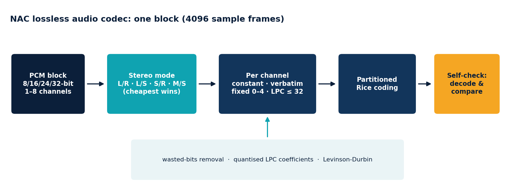
الكتل وإزالة ارتباط الستيريو
يُقطَّع الصوت إلى كتل من 4096 إطار عينات، كل واحدة مرمَّزة بشكل مستقل، ما يجعل المرمّز متيناً (لا يمكن للخطأ الانتشار) ويتيح للمشفِّر التكيف مع المواد المتغيرة. وبالنسبة للستيريو، يختار المشفِّر واحداً من أربعة تمثيلات لكل كتلة:
| الوضع | القنوات المرمَّزة | إعادة البناء |
|---|---|---|
| 0 | اليسرى، اليمنى | مباشر |
| 1 | اليسرى، الجانبية | R = L - S |
| 2 | الجانبية، اليمنى | L = R + S |
| 3 | الوسطى، الجانبية | sum = (M << 1) | (S & 1), L = (sum + S) >> 1, R = (sum - S) >> 1 |
مع Side = L - R وMid = (L + R) >> 1. تحتاج القناة الجانبية بتاً واحداً أكثر من القناة العادية وتُرمَّز بـbits + 1. يُختار الوضع بكلفة منخفضة: يجمع المشفِّر القيم المطلقة لبواقي المتنبئ الثابت من الرتبة 2 لكل من L وR وM وS ويأخذ الزوج صاحب المجموع الأصغر. وبالنسبة للتسجيلات ذات القنوات شديدة الارتباط، يوفِّر Mid/Side عادة عدة نقاط مئوية.
أنواع الإطارات الفرعية
تُخزَّن كل قناة مرمَّزة في الكتلة كواحد من أربعة إطارات فرعية، أيهما أصغر:
| النوع | الاستخدام | الكلفة |
|---|---|---|
| ثابت | جميع العينات متساوية (صمت رقمي) | بتان + بتات عرض العينة لكتلة كاملة |
| حرفي (Verbatim) | مادة شبيهة بالضوضاء، أو الخيار الاحتياطي الآمن | n × بتات العرض |
| ثابت (Fixed) | متنبئ متعدد الحدود من الرتبة 0 إلى 4 | عينات إحماء + بواقٍ |
| LPC | متنبئ خطي من الرتبة 1 إلى 32 مع معاملات مرسلة | معاملات + إحماء + بواقٍ |
البتات المهدرة. إذا كانت البتات المنخفضة لكل عينة في كتلة صفراً دائماً (تسجيل 8 بتات مخزَّن في حاويات 16 بتاً، أو إشارة مكمَّاة)، تُزال ويُخزَّن عددها في 5 بتات.
المتنبئات الثابتة
order 0: e[i] = x[i]
order 1: e[i] = x[i] - x[i-1]
order 2: e[i] = x[i] - 2*x[i-1] + x[i-2]
order 3: e[i] = x[i] - 3*x[i-1] + 3*x[i-2] - x[i-3]
order 4: e[i] = x[i] - 4*x[i-1] + 6*x[i-2] - 4*x[i-3] + x[i-4]
تُخزَّن أول order عينات في الكتلة حرفياً كقيم إحماء.
الترميز التنبئي الخطي (LPC)
بالنسبة للموسيقى النغمية والتوافقية، يكون المتنبئ الذي تُضبط معاملاته على الكتلة أفضل بكثير من متعدد حدود ثابت. يحسبها المشفِّر كما يلي:
- تطبيق نافذة Tukey (تدرّج تناقصي على الربعين الأول والأخير) على الكتلة، حتى لا تشوِّه حوافها الإحصاءات.
- حساب الارتباط الذاتي
r[0..32]للإشارة المطبَّقة عليها النافذة. - تشغيل استدعاء Levinson-Durbin، الذي ينتج مجموعة المعاملات المثلى لكل رتبة من 1 إلى 32 في تمريرة واحدة:
k = (r[i] - sum a[j] r[i-j]) / err، وa[i] = k، وa[j] = a[j] - k a[i-j]، وerr = err (1 - k^2). - تكمية المعاملات الحقيقية إلى أعداد صحيحة بدقة 12 أو 14 أو 15 بتاً (حسب عرض العينة)، مع اختيار مقياس من قوى الاثنين (
shift، من 0 إلى 20) بحيث يتسع أكبر معامل بالكاد. يستخدم التقريب تغذية راجعة للخطأ، فلا تتراكم أخطاء التكمية عبر المعاملات. - تقييم عدة رتب (تعتمد المجموعة على مستوى الجهد، أدناه)، وحساب بواقي كل منها، والاحتفاظ بالرتبة ذات أصغر حجم إجمالي مقدَّر، بما في ذلك كلفة إرسال معاملاتها.
المتنبئ نفسه حساب صحيح خالص، وهو ما ينفذه المفكِّك:
pred[i] = (q[0]*x[i-1] + q[1]*x[i-2] + ... + q[n-1]*x[i-n]) >> shift
e[i] = x[i] - pred[i] (n = order; the sum uses 64 bits)
تُستخدم الفاصلة العائمة فقط في المشفِّر لتقرير المعاملات الصحيحة التي ستُرسل. ولا يلمس المفكِّك الفاصلة العائمة أبداً، لذا يكون فك الترميز مطابقاً بتاً ببت على كل معالج وكل مترجم.
ترميز البواقي
تُربط أخطاء التنبؤ بأعداد غير موقعة بتحويل zig-zag (u = (e << 1) XOR (e >> 63)، بحيث تصبح القيم الموجبة والسالبة الصغيرة أعداداً صغيرة) وتُرمَّز بأكواد Rice المقسمة. يُقسَّم بواقي الكتلة إلى 2^p قسم (p من 0 إلى 8، يختاره المشفِّر)؛ ويحصل كل قسم على معامل Rice خاص به k (5 بتات). تُكتب القيمة بصيغة u >> k بالأحادي (ذلك العدد من الأصفار وواحد) يليه البتات k المنخفضة. يُشتق أفضل k لقسم من مجموع قيمه، لذا يمكن تقدير كلفة كل متنبئ مرشح بثمن بخس من المجاميع الجارية بدلاً من ترميزه.
مستويات الجهد
يحدد مستوى الأرشيف (خيار -m) عدد رتب LPC التي تُجرَّب لكل كتلة. تعني الرتب الأكثر نتيجة أصغر قليلاً ومشفِّراً أبطأ؛ بينما تبقى سرعة المفكِّك كما هي.
| مستوى الأرشيف | جهد NAC | رتب LPC المجرَّبة |
|---|---|---|
| -m1 | 0 | 8, 16 |
| -m2, -m3 | 1 | 4, 8, 12, 16, 24, 32 |
| -m4, -m5 | 2 | 2, 4, 6, 8, 10, 12, 14, 16, 18, 20, 24, 28, 32 |
تُجرَّب المتنبئات الثابتة من الرتبة 0 إلى 4 دائماً. وفي الاختبار المعياري غيّر مستوى الجهد نتيجة موسيقى الستيريو بأقل من 0.05 %: يأتي المكسب الكبير من استخدام التنبؤ أصلاً.
تخطيط بتات الكتلة
block := [stereo mode: 2 bits] sub-frame [sub-frame] (byte-padded)
sub-frame := type:2 ...
CONSTANT : value:width
VERBATIM : wasted:5 samples:(n x (width - wasted))
FIXED : wasted:5 order:3 warm-up residual
LPC : wasted:5 order-1:5 precision-1:4 shift:5
coefficients warm-up residual
residual := partition-order:4 per partition: k:5 Rice-coded values
تُخزَّن كل كتلة في الأرشيف مع طول 32 بتاً في المقدمة، لذا يعرف المفكِّك دائماً أين تبدأ الكتلة التالية.
7.4 التحقق الذاتي
كتابة أرشيف هي الفرصة الوحيدة لاكتشاف خطأ في المشفِّر، لذا لا يثق مشفِّر NAC بنفسه. بعد ترميز كل كتلة يفك ترميزها مرة أخرى ويقارن النتيجة بالعينات الأصلية. وعند أي اختلاف يعيد ترميز الكتلة حرفياً (وهو ما لا يمكن أن يفشل) ويفحص مرة أخرى؛ وإن فشل حتى ذلك، يتوقف الأرشفة بخطأ صريح واقتراح استخدام -mc-. ويُختبر مسار الاحتياط في اختبارات الوحدة، التي تجبر الترميز الحرفي لكل توليفة من عمق البتات وعدد القنوات، وتحوِّل الآلية خطأ فقدان بيانات صامتاً محتملاً إلى حالة مكتشفة قابلة للاسترداد.
علاوة على ذلك، يُخضَع المفكِّك للاختبار العشوائي (fuzzing): تُغذَّى آلاف الكتل من البايتات العشوائية وكتل بتاتها مقلوبة إليه في اختبارات الوحدة، ويجب أن يعيد خطأً دون أن يهلع أو يخصص كميات غير معقولة من الذاكرة. أثناء التطوير وجد هذا خطأً حقيقياً (بالنسبة لمواد 32 بتاً يمكن أن يخرج بحث معامل Rice فارغاً ويلجأ إلى معامل كان سينتج كوداً بحجم عدة غيغابايتات)؛ وقد أُصلح وأصبح مغطى باختبار.
7.5 Shuffle وShuffle+Delta
لا يستجيب بعض الصوت للتنبؤ. ملفات WAV الخاصة بالمعرض المستخدمة في الاختبار المعياري هي 16 بتاً، ومع ذلك تحتوي على نحو ألف قيمة عينة مميزة فقط، لأنها أُنتجت من مصدر 8 بتات مضغوط. لا يستطيع المتنبئ استغلال ذلك، ويضغطها FLAC إلى 84 % من الأصل بينما يحتاج Zstandard العادي إلى 63 %. ما يساعد هو ترتيب البايتات بحيث يرى الضاغط بيانات متجانسة:
- يفصل Shuffle بايتات العينات إلى مستويات (planes): كل بايتات الأهمية الأقل للقناة 0، ثم كل بايتات الأهمية الأكبر للقناة 0، ثم القناة 1، وهكذا، في كتل من 32768 إطاراً. يكون مستوى البايتات العالية أملس ومستوى البايتات المنخفضة محدود الأبجدية جداً؛ فيصمغ مشفِّر الإنتروبيا في Zstandard كل منهما أفضل بكثير من الخليط المتشابك.
- يستبدل Shuffle+Delta أولاً كل عينة بفرقها عن العينة السابقة للقناة نفسها (بمقياس عرض العينة، لذا فهو قابل للعكس تماماً، مع حمل الحالة عبر الكتل) ثم يخلط. يساعد هذا عندما تكون الإشارة أملس لكن غير قابلة للتنبؤ بما يكفي ليفوز NAC.
على ملفات المعرض الـ35 يكون الأرشيف صاحب أفضل مرشِّح لكل ملف (الذي تختاره التجربة) بنسبة 51 % من الحجم الأصلي عند -m2 و47 % عند -m5، مقابل 63 % لـZstandard العادي.
7.6 ملفات ProTracker MOD
وحدة MOD هي ترويسة بحجم 1084 بايتاً (العنوان، و31 واصف عينة، وجدول ترتيب أنماط من 128 عنصراً، وتوقيع 4 بايتات عند الإزاحة 1080)، تليها بيانات الأنماط، ثم العينات الخام 8 بتات ذات الإشارة لجميع الآلات. يحسب nikpak أين تبدأ العينات وما طولها:
patterns = max(order table) + 1
sample_start = 1084 + patterns * 256 * channels (4 ch: 1024 B per pattern)
sample_bytes = sum of (length in words * 2) over the 31 descriptors,
clamped to the end of the file
تُخزَّن الترويسة والأنماط كما هي (يتعامل الضاغط جيداً مع أحداث النوتات المتكررة تلك) وتُعامَل منطقة العينات كتيار أحادي واحد بإشارة و8 بتات للتجربة. لكل ملف، يفوز NAC أو Shuffle+Delta أو الضغط العادي: تميل الآلات المعيّنة إلى تفضيل NAC، بينما يفوز الضغط العادي في بعض الوحدات (على سبيل المثال تلك ذات العينات القصيرة جداً أو المتكررة جداً). تُعالج الوحدات المبتورة بتقييد المنطقة بالبيانات الموجودة فعلاً.
7.7 صور BMP
يخزِّن BMP غير المضغوط صفوف بكسلات محشوة إلى مضاعف أربعة بايتات. يعمل المرشِّح في أربع خطوات:
- تقسيم منطقة البكسلات إلى مستوى لكل قناة (B وG وR وA لـ32 بتاً)، مع تذكر بايتات الحشو لكل صف على حدة.
- إزالة ارتباط اللون. طرح مستوى الأخضر من المستويين الأزرق والأحمر (بمقياس 256). في الصور الفوتوغرافية تكون القنوات الثلاث شديدة الارتباط، لذا تكون الفروق صغيرة.
- التنبؤ بكل بكسل من جيرانه بمتنبئ MED (كاشف الحواف الوسيطي)، المستخدم في مرمّز الصور LOCO-I: بالنسبة لليسار
aوالأعلىbوالأعلى-يسارc، يكون التنبؤmin(a,b)إذا كانc >= max(a,b)، وmax(a,b)إذا كانc <= min(a,b)، وa + b - cفيما عدا ذلك. يستبدل خطأ التنبؤ البكسل (بمقياس 256). على الحواف يتبع المتنبئ الحافة؛ وعلى التدرجات الناعمة يستقرئ التدرج. - دمج مستويات البواقي وبايتات الحشو وترك Zstandard يضغطها. تصبح المناطق الناعمة سلاسل من بايتات قريبة من الصفر.
يعكس المفكِّك الخطوات تماماً. وتتخطى ملفات BMP ذات 8 بتات خطوة اللون؛ ثم تقرر التجربة ما إذا كان التنبؤ مفيداً لتلك اللوحة، لأن التنبؤ بفهارس اللوحة لا يكون منطقياً إلا للوحات الرمادية أو المرتبة بسلاسة. ولا تُفلتَر ملفات BMP الأكبر من 256 MiB، للحد من استخدام الذاكرة.
7.8 لماذا يتفوق هذا على RAR
يضغط RAR الوسائط بمحركه العام للمطابقة وHuffman مع مجموعة صغيرة من مرشِّحات البايتات. بدلاً من ذلك يمنح nikpak الصوتَ مرمّزاً تنبئياً حقيقياً مع إزالة ارتباط الستيريو لكل كتلة وترميز Rice متكيف، ويمنح الصورَ متنبئاً ثنائي الأبعاد سليماً مع إزالة ارتباط اللون، ويختار لكل ملف بالقياس. والنتيجة ظاهرة في الاختبار المعياري: أصغر بنسبة 12 إلى 15 % في الصوت من كل نوع، و13 % في موسيقى tracker، و39 % في الصور الفوتوغرافية، وتقع نتيجة NAC للمسار الستيريو ضمن 0.2 % من مشفِّر FLAC المتخصص.
7.9 مستندات Office وPDF وgzip: إعادة ضغط Deflate
ملفات Office الحديثة هي أرشيفات ZIP من XML (docx وxlsx وpptx وodt وods)، وتخزِّن ملفات PDF صفحاتها في تدفقات Deflate (FlateDecode). لذا يكون محتواها مضغوطاً مسبقاً، ولا يستطيع أي أرشيفي تصغيره كثيراً: في اختبار الإصدار 1.1 المعياري، لم تنخفض 6.6 MB من ملفات .xlsx إلا إلى 5.6 MB مع 7-Zip. يزيل nikpak 1.2 تلك العقبة.
- الاكتشاف بالمحتوى. ترويسة ZIP محلية (PK\x03\x04) في بداية الملف، أو %PDF- أو ترويسة gzip؛ ولا يُستخدم الامتداد أبداً.
- فك الترميز. يُعثر على كل تدفق Deflate (عناصر ZIP بالطريقة 8، وتدفقات PDF بترويسة zlib، وكل عضو gzip) ويُحلَّل بـpreflate (مكتبة preflate-rs من Microsoft). يعيد preflate البيانات الصريحة إضافة إلى سجل تصحيحات صغير يصف بالضبط كيف اتخذ المشفِّر الأصلي خياراته، أياً كان ذلك المشفِّر.
- التخزين. يُخزَّن الملف كسلسلة من المقاطع الخام وأزواج (النص الصريح، التصحيحات). ثم يذهب XML الصريح أو وصف الصفحة إلى التدفق solid، حيث يضغطه LZMA2 إلى جزء صغير من حجمه بتنسيق Deflate.
- التحقق. قبل استخدام النتيجة، يعيد nikpak بناء كل تدفق Deflate ويقارن طول الملف كاملاً وCRC32 الخاص به مع الأصل. إذا اختلف أي شيء، أو فشل preflate أو هلع على ملف مشوه، يُخزَّن الملف ببساطة بشكل عادي.
- الاستخراج. يُعاد إنشاء تدفقات Deflate بتاً ببت، لذا يكون ملف .docx أو .pdf المستخرج مطابقاً بايتاً ببايت، ويُفحص CRC32 الخاص به كما لكل عنصر.
على مجموعة Office في القسم 11.7 هذا ما يجعل nikpak أصغر من كل أرشيفي آخر. تحتوي 6.6 MB من ملفات .xlsx على 71 MB من XML بمجرد فك ترميزه، ويُضغط ذلك XML أفضل بكثير مما فعل Deflate. الثمن هو الوقت: يحلل preflate نحو 15 MB من البيانات الصريحة في الثانية. ولهذا السبب تُستخدم إعادة الضغط عند -m4 و-m5 فقط، حيث تستحق عناءها (قياسياً: كسب -m3 نسبة 0.5 % مقابل ستة أضعاف الوقت). الحدود: ملفات حتى 512 MiB، ولكل تدفق حتى 512 MiB من البيانات الصريحة و64 MiB من التصحيحات. ويطفئها -mc-.
8 التشفير
بُني تشفير nikpak بالكامل من مكونات قياسية مدروسة جيداً (تطبيقا RustCrypto لـArgon2id وXChaCha20-Poly1305). لم تُبتكر أي بدائية لهذا المشروع؛ ويكمن العمل في دمجها بشكل صحيح.
8.1 نموذج التهديد
يفترض التصميم مهاجماً يحصل على ملف الأرشيف ويستطيع دراسته وتعديله على مهل، ويستطيع تجربة عدد غير محدود من تخمينات كلمة المرور دون اتصال. يهدف nikpak إلى ضمان:
- سرية محتويات الملفات و كل ما يتعلق بها: الأسماء والأحجام والطوابع الزمنية والصلاحيات وعدد الملفات.
- السلامة والأصالة: أي تغيير في الأرشيف، سواء في البيانات أو الترويسة أو ترتيب البيانات أو طولها، يُكتشف قبل قبول بيانات خاطئة.
- مقاومة التخمين: كل تخمين لكلمة المرور يُجعَل مكلفاً قدر الإمكان عملياً.
لا يخفي وجود الأرشيف ولا حجمه التقريبي، ولا يستطيع الحماية من البرمجيات الخبيثة على الجهاز الذي ينشئ الأرشيف أو يفتحه، ولا من كلمة مرور ضعيفة.
8.2 من كلمة المرور إلى المفتاح: Argon2id
كلمة المرور مفتاح رديء: قصيرة وقابلة للتنبؤ ويكتبها إنسان. تتحول إلى مفتاح 256 بتاً باستخدام Argon2id، الفائز في مسابقة تهشير كلمات المرور والخوارزمية المقننة في RFC 9106. صُمم Argon2id ليكون مستهلكاً للذاكرة عمداً: يتطلب حساب مفتاح واحد كتلة ذاكرة كبيرة تُملأ ثم تُقرأ مراراً بنمط يعتمد على البيانات. يستخدم nikpak ملف تعريف الذاكرة المنخفضة من RFC:
| المعامل | القيمة | المعنى |
|---|---|---|
| الذاكرة | 64 MiB | يحتاج كل تخمين إلى 64 MiB من الذاكرة السريعة |
| التمريرات | 3 | تُعالج الذاكرة ثلاث مرات |
| الحارات | 4 | درجة التوازي داخل عملية الاشتقاق الواحدة |
| الملح (Salt) | 16 بايتاً عشوائياً | جديد لكل أرشيف: كلمات المرور المتطابقة تعطي مفاتيح مختلفة، وتصبح الجداول المحسوبة مسبقاً عديمة الفائدة |
| المخرج | 32 بايتاً | مفتاح XChaCha20-Poly1305 |
استهلاك الذاكرة هو ما يميز Argon2id عن PBKDF2 الأقدم (المستخدم في RAR5 وفي وضع AES الخاص بـZIP): لا يحتاج PBKDF2 إلى ذاكرة تقريباً، لذا يمكن لبطاقة رسوميات أو شريحة مخصصة اختبار أعداد هائلة من التخمينات بالتوازي. مع Argon2id يجب أن توفر عتاد المهاجم 64 MiB لكل تخمين متوازٍ، ما يزيل معظم تلك الميزة. وكلفة ذلك على المستخدم الشرعي جزء من الثانية، تُدفع مرة واحدة لكل أرشيف.
تُخزَّن المعاملات في الترويسة، لذا يمكن للإصدارات المستقبلية رفعها دون كسر الأرشيفات القديمة. وعند القراءة تُفحص نطاقاتها أولاً (الذاكرة 8 × الحارات حتى 1 GiB، والتمريرات من 1 إلى 64، والحارات من 1 إلى 64) بحيث لا يستطيع أرشيف خبيث جعل nikpak يخصص كميات عبثية من الذاكرة قبل التحقق من كلمة المرور.
8.3 XChaCha20-Poly1305 في بنية STREAM
تُحمى البيانات الكبيرة بـXChaCha20-Poly1305، وهو تشفير موثَّق مع بيانات مرتبطة (AEAD): يوفر ChaCha20 تشفيراً تيارياً بمفتاح 256 بتاً، ويوسِّع المتغير X قيمة nonce إلى 192 بتاً (كبيرة بما يكفي للاختيار عشوائياً دون تكرار أبداً)، ويضيف Poly1305 وسم توثيق 128 بتاً لكل رسالة مختومة. ChaCha20 سريع على كل معالج دون تعليمات خاصة، وعلى عكس AES القائم على الجداول، فهو خالٍ طبيعياً من تسريبات توقيت الذاكرة المخبئية.
الأرشيف أكبر بكثير من رسالة واحدة، لذا يستخدم nikpak بنية STREAM (البنية نفسها التي تستخدمها أدوات تشفير الملفات الحديثة): تُقطَّع البيانات إلى مقاطع بحجم 64 KiB ويُختَم المقطع رقم i تحت nonce
nonce (24 bytes) = random prefix (19 bytes)
| chunk counter (4 bytes, big endian)
| last-chunk flag (1 byte)
يمنح هذا ثلاث ضمانات دفعة واحدة. لكل مقطع nonce فريد، وهو أمر جوهري للتشفير التياري. ولأن العداد جزء من nonce، فإن إعادة ترتيب المقاطع أو تكرارها يفشل التوثيق. ولأن المقطع الأخير يحمل علماً مختلفاً، فإن بتر الأرشيف، حتى عند حدود المقاطع تماماً، يفشل التوثيق: فالمقطع الأخير الجديد كان مختوماً كمقطع غير نهائي. البادئة ذات الـ19 بايتاً عشوائية لكل أرشيف.
إضافة إلى ذلك، تُمرَّر ترويسة الأرشيف الكاملة (الإصدار والأعلام والطريقة ومعاملات Argon2id والملح وبادئة nonce) كـبيانات مرتبطة لكل مقطع. تُوثَّق لكنها لا تُشفَّر؛ وقلب أي بت فيها يجعل كل مقطع يفشل. وهذا يصد أيضاً هجمات خفض الإصدار التي تحاول إضعاف المعاملات المخزنة.
| البند | القيمة |
|---|---|
| التشفير | XChaCha20-Poly1305: مفتاح 256 بتاً، وnonce بـ192 بتاً، ووسم بـ128 بتاً |
| المقطع | حتى 64 KiB من النص الصريح؛ يُخزَّن بصيغة u32 length + النص المشفر + وسم 16 بايتاً |
| تكلفة الحجم | نحو 0.03 % (20 بايتاً لكل 64 KiB)، وقيسَت بنسبة 0.03 % على مجموعة بيانات 222 MB |
| تكلفة السرعة | قياسياً: +0.3 ثانية إجمالاً على مجموعة بيانات 222 MB (0.92 ثانية بدلاً من 0.64 ثانية)، بما في ذلك اشتقاق المفتاح |
| كلمة مرور خاطئة | تُكتشف عند المقطع الأول؛ ولا يُنتج أي نص صريح |
8.4 ما يستطيع المراقب رؤيته وما لا يستطيعه
| مرئي بدون كلمة المرور | محمي |
|---|---|
| التوقيع السحري والإصدار والأعلام وطريقة الضغط | أسماء الملفات وبنية المجلدات |
| معاملات Argon2id والملح وبادئة nonce | أحجام الملفات والطوابع الزمنية والصلاحيات |
| حجم الأرشيف الإجمالي وعدد المقاطع | عدد الملفات |
| كونه أرشيف nikpak | كل المحتوى، بما في ذلك ما إذا كان يحتوي وسائط |
إحدى نتائج الضغط قبل التشفير أن حجم الأرشيف يعكس مدى قابلية البيانات للضغط. هذا أمر متأصل في كل أرشيفي يضغط ويشفر؛ ولا يهم إلا إذا استطاع المهاجم التحكم في جزء من البيانات ومراقبة الحجم، وهو ما لا ينطبق على أرشفة الملفات.
8.5 التعامل مع كلمات المرور
- الطول الأدنى. 8 أحرف عند إنشاء أرشيف؛ وتُرفض كلمات المرور الأقصر مع توضيح.
- التأكيد. تسأل المطالبة التفاعلية مرتين، ولا تُظهر الأحرف المكتوبة، وترفض عدم التطابق.
- التوليد. بدون كلمة مرور، يسحب nikpak 24 حرفاً من أبجدية تضم 56 رمزاً تستبعد المتشابهات (0/O و1/l/I)، باستخدام أخذ العينات بالرفض على المولِّد العشوائي الآمن تشفيرياً في نظام التشغيل بحيث لا يكون أي رمز أكثر احتمالاً من غيره. أي 24 × log2(56)، نحو 139 بتاً من الإنتروبيا، وتُعرض مرة واحدة في مربع مميز بوضوح.
- نظافة الذاكرة. يُمسح المفتاح المشتق وسلاسل كلمة المرور من الذاكرة عندما لا تعود هناك حاجة إليها (حزمة
zeroize). - القنوات. سطر الأوامر (
-p)، أو متغير البيئةNIKPAK_PASSWORD، أو المطالبة التفاعلية، أو stdin عند غياب الطرفية. صيغة سطر الأوامر مريحة لكنها مرئية في قائمة العمليات؛ والأشكال الأخرى أفضل.
8.6 اختبارات الهجوم
نُفِّذت التلاعبات التالية بأرشيفات مشفرة ضد البرنامج النهائي. واكتُشفت جميعها قبل قبول أي بيانات خاطئة:
| التلاعب | النتيجة |
|---|---|
| قلب بايت واحد في منتصف النص المشفر | مرفوض: فشل التوثيق (خروج 11) |
| قلب بايت من الملح في الترويسة | مرفوض (الترويسة بيانات مرتبطة ويتغير المفتاح) |
| تغيير بايت الطريقة في الترويسة | مرفوض |
| بتر الملف بمقدار 100 بايت | مرفوض كتالف (خروج 3) |
| حذف المقطع الأخير عند حدود المقاطع تماماً | مرفوض: المقطع الأخير الجديد يفتقد العلم النهائي |
| تبديل مقطعين | مرفوض: عدم تطابق العداد |
| إمداد كلمة مرور خاطئة | مرفوض عند المقطع الأول (خروج 11) |
| إدخال ملف عشوائي كأرشيف | مرفوض: توقيع غير صالح (خروج 3) |
| المخاطر المتبقية، بصراحة يمكن دائماً تخمين كلمة المرور الضعيفة؛ يجعلها Argon2id مكلفة لكنه لا يستطيع إنقاذ password123. لم يُدقَّق nikpak تدقيقاً مستقلاً. ولا يستطيع الدفاع ضد مسجِّلات لوحة المفاتيح أو البرمجيات الخبيثة أو من يقرأ ذاكرة العملية قيد التشغيل. وبالنسبة للبيانات التي قد يسبب كشفها ضرراً جسيماً، اطلب من خبير تشفير مراجعة التطبيق أولاً. |
9 مقاومة الحوسبة الكمومية
تهدد الحواسيب الكمومية بعض التشفير بشدة وتكاد لا تمس تشفيراً آخر. صُمم nikpak على الجانب الذي لا يكاد يتأثر.
9.1 ما الذي تغيره الحواسيب الكمومية
| الخوارزمية | الأثر | مَن يتأثر |
|---|---|---|
| Shor (1994) | يحلل الأعداد الصحيحة إلى عوامل ويحسب اللوغاريتمات المتقطعة في زمن كثير الحدود | RSA وDiffie-Hellman وDSA وتشفير المنحنيات الإهليلجية: مكسورة بواسطة حاسوب كمومي كبير |
| Grover (1996) | يبحث في فضاء غير منظم من N عنصراً في نحو الجذر التربيعي لـN خطوة | المفاتيح المتماثلة ودوال التهشير: ينخفض طول المفتاح الفعال إلى النصف |
خوارزمية Shor هي الدراماتيكية: سوف تكسر كل نظام يعتمد على رياضيات المفاتيح العامة، ولهذا تنتقل الحكومات وهيئات المعايير إلى خوارزميات مفاتيح عامة ما بعد الكم مثل ML-KEM (FIPS 203). أما خوارزمية Grover فهي اللطيفة: يوفر مفتاح 256 بتاً نحو 128 بتاً من الأمان ضدها، وتكرارات Grover متسلسلة بطبيعتها، لذا فإن توزيع العمل على عدة أجهزة كمومية لا ينتج سوى الجذر التربيعي لعددها كتسريع.
9.2 موقف nikpak
| المكوِّن | البدائية | الأثر الكمومي |
|---|---|---|
| التشفير | XChaCha20، مفتاح 256 بتاً | أفضل هجوم معروف: Grover، نحو 2^128 عملية. بعيد المنال. |
| التوثيق | Poly1305، وسم 128 بتاً، مُشتق من سر 256 بتاً | لا رياضيات مفاتيح عامة معنية |
| من كلمة المرور إلى المفتاح | Argon2id، 64 MiB، و3 تمريرات | يمكن لـGrover في أقصى تقدير خفض إنتروبيا كلمة المرور إلى النصف، وكل تكرار سيتطلب تقييم دالة مستهلكة للذاكرة |
| العشوائية | مولِّد أرقام عشوائية آمن تشفيرياً في نظام التشغيل (CSPRNG) | غير متأثر |
| تشفير المفاتيح العامة | لا شيء | لا شيء لتهاجمه خوارزمية Shor |
المفتاح المتماثل 256 بتاً هو المرجع لأعلى فئة أمان (الفئة 5) في معايير NIST ما بعد الكم: تُقيَّم خوارزميات المفاتيح العامة التي يقننها NIST بمدى اقترابها من صعوبة البحث الشامل في مفتاح AES بطول 256 بتاً. بعبارة أخرى، يجلس تشفير بيانات nikpak بالفعل عند مستوى القوة الذي تستهدفه معايير ما بعد الكم.
9.3 وماذا عن كلمة المرور؟
فضاء مفاتيح التشفير هو 256 بتاً، لكن المفتاح مشتق من كلمة مرور، لذا تكون القوة الحقيقية هي الأصغر بين إنتروبيا كلمة المرور و256 بتاً. ضد خصم كمومي تُنصَّف إنتروبيا كلمة المرور، في أفضل الأحوال للمهاجم:
| كلمة المرور | الإنتروبيا | البحث الكلاسيكي | بحث Grover (في أفضل الأحوال) |
|---|---|---|---|
| مولَّدة من nikpak (24 رمزاً) | نحو 139 بتاً | نحو 2^139 تخميناً | نحو 2^70 تكراراً، كل منها يتطلب تقييم Argon2id متماسكاً بحجم 64 MiB |
| ست كلمات Diceware عشوائية | نحو 77 بتاً | نحو 2^77 تخميناً | نحو 2^39 تكراراً للدارة المكلفة نفسها |
| كلمة مرور من 10 أحرف يختارها إنسان | عادةً من 30 إلى 45 بتاً | ممكنة | ممكنة |
الخلاصة هي المألوفة، بصياغة أكثر حدة: كلمة المرور هي نقطة الضعف، لا التشفير. استخدم كلمة المرور المولَّدة أو عبارة مرور عشوائية طويلة وسيقاوم الأرشيف المهاجمين الكلاسيكيين والكموميين في أي مستقبل منظور. يساعد Argon2id في العالمين، لأن كلفة كل تخمين تهيمن عليها الذاكرة، وخوارزمية Grover لا تجعلها أرخص.
9.4 "اجمع الآن، وفك التشفير لاحقاً"
التهديد الكمومي كثير الاستشهاد هو أن يسجل الخصم بيانات مشفرة اليوم ويفك تشفيرها عند وجود حاسوب كمومي. بالنسبة للأنظمة التي تتبادل المفاتيح بـRSA أو المنحنيات الإهليلجية، مثل اتصالات TLS أو تشفير البريد الإلكتروني، هذا حقيقي. لا يوجد في أرشيف nikpak تبادل مفاتيح: يأتي مفتاحه من سر لا يغادر رأس المستخدم أو مدير كلمات المرور. لا يمكن فتح النسخة المخزنة لاحقاً إلا بتخمين ذلك السر، ولا تجعل الحواسيب الكمومية ذلك أسهل جوهرياً.
9.5 الحدود الصادقة والطريق إلى الأمام
- تعني "مقاومة الحوسبة الكمومية" أنه لا توجد خوارزمية كمومية معروفة تتفوق على البحث العام ضد هذه البدائيات. وهي ليست إثباتاً؛ يستمر تحليل شيفرات ChaCha20 وArgon2، والصيغة مُرقَّمة الإصدارات بحيث يمكن تغيير المعاملات أو الخوارزميات.
- إذا أُضيفت مشاركة المفاتيح العامة يوماً (تشفير أرشيف بمفتاح المستلم)، فستستخدم مخططاً هجيناً، X25519 مدمجاً مع ML-KEM، بحيث يكون آمناً إذا صمد أي من المكونين.
- لا تحمي مقاومة الحوسبة الكمومية من أخطاء التنفيذ. انظر القسمين 8.6 و10.
10 التحصين والمتانة
يقرأ الأرشيفي ملفات كتبها غرباء ويكتب ملفات على قرص مستخدمه، ما يجعله هدفاً كلاسيكياً. يعامل nikpak كل أرشيف كمدخل غير موثوق.
10.1 الاستخراج الآمن
- اختراق المسارات ("zip slip"). يُطبَّع اسم كل عنصر: تتحول الشرطات المائلة الخلفية إلى شرطات مائلة، وتُسقط المكونات الفارغة ومكوِّن
.، ويتسبب أي مكوِّن..في تخطي العنصر مع تحذير. تفقد الأسماء المطلقة جذرها، لذا يُستخرج/etc/passwdداخل مجلد الوجهة. - أسماء Windows. عند التشغيل على Windows، تُرفض المكونات التي تحتوي
< > : " | ? *أو أحرف تحكم، أو تنتهي بمسافة أو نقطة، أو تساوي اسم جهاز محجوزاً (CON وPRN وAUX وNUL وCOM1-9 وLPT1-9). - الروابط الرمزية. قبل الكتابة، يُفحص كل مكوِّن موجود من المسار الهدف تحت الوجهة؛ ولا يُتبع الرابط أبداً. يُحذف الملف الموجود أولاً ويُنشأ الجديد باستخدام
create_new، الذي يرفض فتح مسار موجود، لذا لا يمكن استخدام رابط لإعادة توجيه الكتابة. - بتات الامتياز. لا تُستعاد بتات setuid وsetgid وsticky أبداً؛ وتُقنَّع الصلاحيات إلى بتات rwx العادية.
- الملفات الفاشلة. يُحذف الملف الذي لا يطابق CRC32 الخاص به، ولا يُترك خلفه.
استُخرج في الاختبارات أرشيف مبني يدوياً يحتوي ../../evil.txt و/tmp/evil.txt و..\..\evil.txt وok/../../evil.txt: لم يفلت أي شيء من الوجهة، وأُبلغ عن العناصر غير الآمنة وتُخطيت، ورُفض رابط رمزي مزروع في الوجهة.
10.2 مفكِّكات محدودة الموارد
- تُفحص نطاقات معاملات Argon2id قبل أي تخصيص (القسم 8.2).
- يجب أن يكون طول المقاطع المشفرة بين 16 بايتاً و64 KiB + 16؛ والأسماء بحد أقصى 4096 بايت؛ ويجب أن تعلن الكتل الصوتية طولاً معقولاً؛ وتُحدَّد مناطق BMP بـ256 MiB؛ وتُقيَّد أكواد Rice الأحادية.
- غُذّيت مفكِّكات الصوت والوسائط بآلاف المدخلات العشوائية وذات البتات المقلوبة في اختبارات الوحدة ويجب أن تعيد خطأً، ولا تهلع أو تُجهض أبداً.
- لا يحتوي كود nikpak نفسه على أي كتل
unsafe، ويحوِّل فحص الحدود في Rust أي خطأ منطقي كان سيصبح خطأ إفساد ذاكرة في C إلى فشل نظيف.
لا يحد nikpak نسبة تمدد الأرشيف، لذا مثل كل أرشيفي، يمكن لـ"قنبلة ضغط" مصممة عمداً أن تملأ القرص عند الاستخراج. اختبر الأرشيفات المجهولة بـt أولاً إذا كان ذلك يهمك.
10.3 الإنشاء الآمن والأخطاء الصادقة
- يُكتب الأرشيف إلى
name.nik.tmpولا يُعاد تسميته إلا عند اكتماله؛ يحذف الحارس الملف المؤقت عند أي فشل، لذا لا يترك التشغيل المتقطع أرشيفاً ناقص الكتابة أو مستبدلاً أبداً. - إذا أصبح الملف أقصر أثناء أرشفته، يجهض nikpak برسالة صريحة بدلاً من كتابة عنصر غير متسق. وتُتخطى الملفات غير القابلة للقراءة والروابط الرمزية والملفات الخاصة مع تحذير (كود خروج 1) ولا يُضاف الأرشيف إلى نفسه أبداً.
- تُصنَّف الأخطاء بحيث تستطيع السكربتات التفاعل: خطأ المجموع الاختباري أو الإطار داخل الأرشيف هو فساد (خروج 3)، وفشل التوثيق هو كلمة مرور خاطئة أو عبث (خروج 11)، والكتابة المرفوضة هي خطأ فادح (خروج 2).
11 الاختبارات المعيارية
يعرض هذا الفصل قياسات لا ادعاءات. يصف بدقة ما قيس، ويتضمن النتائج غير المواتية لـnikpak، ويعطي الأوامر اللازمة لإعادة كل شيء.
قيسَت الأقسام من 11.1 إلى 11.6 باستخدام nikpak 1.1.0، الذي كان -m5 فيه لا يزال يستخدم Zstandard. ويقارن القسم 11.7 الإصدار nikpak 1.2.0 مع RAR و7-Zip وZIP على جهاز واحد.
11.1 المنهجية
| البند | التفصيل |
|---|---|
| الجهاز | آلة افتراضية Linux x86-64، بنواة معالج واحدة. جميع الأوقات بثواني ساعة الحائط على تلك النواة الواحدة؛ والآلات متعددة الأنوية أسرع للأداتين. |
| البرمجيات | RAR 7.00 (26 فبراير 2024، بناء تجريبي لنظام Linux، صيغة -ma5)؛ وnikpak 1.1.0 مبني بوضع release مع LTO؛ وFLAC 1.x بخيار -8 كمرجع صوتي. |
| إعدادات RAR | -m3 (افتراضي RAR) و-m5 (الأفضل). وبالنسبة لاختبار البيانات العامة أيضاً -s (solid) و-md256m (قاموس 256 MB)، لأن أرشيفات nikpak تكون solid دائماً والمقارنة العادلة تتطلب السماح لـRAR بالشيء نفسه. |
| التحقق | استُخرج كل أرشيف nikpak وقورن بالأصل (cmp لملفات الوسائط، وSHA-256 لجميع الملفات الـ10,949 في المجموعة العامة). |
مادة الاختبار
| المجموعة | المحتوى |
|---|---|
| ملفات WAV الخاصة بالمعرض | 35 ملفاً صوتياً من معرض LibreOffice: أحادي 16 بتاً، 23 ملفاً بتردد 11,025 Hz و12 ملفاً بتردد 22,050 Hz. تحتوي على نحو ألف قيمة عينة مميزة فقط (مصادر مضغوطة) وهي حالة محرجة عمداً للترميز التنبئي. |
| الموسيقى | مقطوعة متعددة الآلات مدتها 100 ثانية (بيانو وأوتار وباس وفلوت وطبول) مُصيَّرة بـTiMidity++ ومجموعة أصوات Freepats بتردد 44.1 kHz ستيريو 16 بتاً (17.4 MB). اشتق SoX نسخة أحادية 16 بتاً بتردد 22.05 kHz، وأحادية 8 بتات بتردد 22.05 kHz، وستيريو 24 بتاً بتردد 48 kHz. |
| MOD | 16 وحدة ProTracker من مجموعة اختبار libxmp. |
| BMP | 6 صور: خمس صور فوتوغرافية من مجموعة عينات scikit-image (24 بتاً، إضافة إلى تحويل رمادي 8 بتات لإحداها) وخامة من TeX Live. |
| البيانات العامة | 197.6 MB في 10,949 ملفاً: مكتبة Python القياسية والحزم، والتوثيق، وترويسات C من جهاز الاختبار، مع إزالة الروابط الرمزية. |
| حدود مادة الاختبار هذه الموسيقى اصطناعية: صُيِّرت من MIDI وتحتوي مقاطع متكررة، ما يساعد كل أداة قائمة على LZ، بما في ذلك مرحلة Zstandard بعد NAC. تحتوي التسجيلات الحقيقية على تكرارات دقيقة أقل، لذا ستختلف الأحجام المطلقة. تعامل المقارنة كل الأدوات بالمثل، وتؤكد نتيجة FLAC على الملف نفسه أن المرمّز الصوتي نفسه تنافسي، لكن على القراء أصحاب المواد المحددة قياسها: يفعل nikpak mt ذلك بالضبط. |
11.2 ملفات الوسائط
| المجموعة | الأصل | RAR 7 -m5 | nikpak -m2 | nikpak -m5 | m5 مقابل RAR |
|---|---|---|---|---|---|
| 6 صور BMP فوتوغرافية | 9,183,956 | 2,862,744 | 2,035,223 | 1,750,706 | أصغر بنسبة 38.8 % |
| 16 ملف ProTracker MOD | 2,507,557 | 1,070,290 | 966,622 | 927,973 | أصغر بنسبة 13.3 % |
| 35 ملف WAV من المعرض (أحادي 16 بتاً) | 2,991,820 | 1,605,879 | 1,529,219 | 1,418,532 | أصغر بنسبة 11.7 % |
| موسيقى 44.1 kHz ستيريو 16 بتاً | 17,371,848 | 11,024,411 | 9,415,519 | 9,411,898 | أصغر بنسبة 14.6 % |
| موسيقى 22.05 kHz أحادي 16 بتاً | 4,342,996 | 3,112,135 | 2,635,819 | 2,634,669 | أصغر بنسبة 15.3 % |
| موسيقى 22.05 kHz أحادي 8 بتات | 2,171,520 | 844,160 | 742,462 | 740,751 | أصغر بنسبة 12.2 % |
| موسيقى 48 kHz ستيريو 24 بتاً | 28,362,206 | 21,467,283 (-m3) | 18,689,529 | 18,688,030 | أصغر بنسبة 12.9 % |
جميع الأحجام بالبايتات. بالنسبة لملف 24 بتاً لم يُقاس RAR إلا عند -m3، لذا يكون ذلك الصف مقارنة أضعف من البقية.
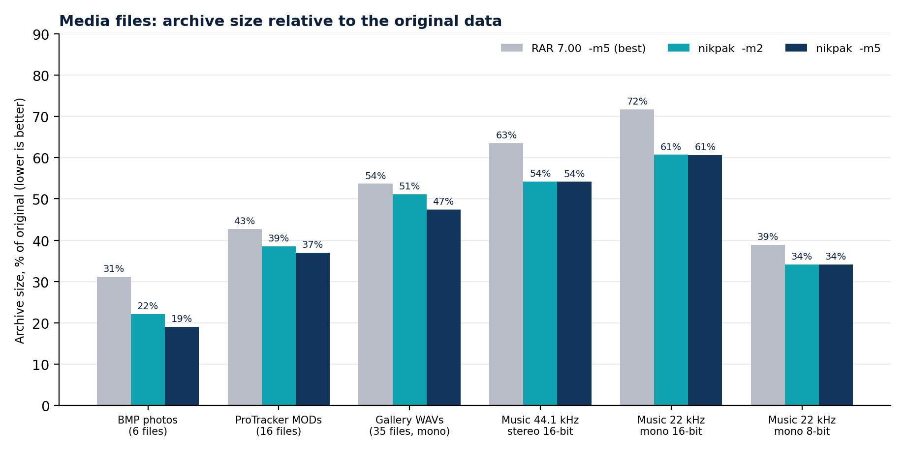
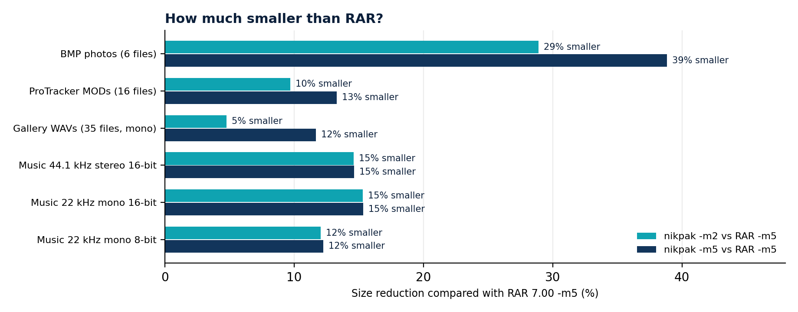
ما الذي تضيفه مرشِّحات الوسائط
nikpak نفسه بدون مرشِّحات الوسائط (الإصدار 1.0، Zstandard عادي عند المستوى الافتراضي) هو المقياس الصحيح لقيمة طبقة الوسائط:
| المجموعة | nikpak 1.0 (بدون مرشِّحات) | nikpak 1.1 -m2 | التقليص |
|---|---|---|---|
| 6 صور BMP فوتوغرافية | 3,580,971 | 2,035,223 | 43.2 % |
| 16 ملف ProTracker MOD | 1,260,607 | 966,622 | 23.3 % |
| 35 ملف WAV من المعرض (أحادي 16 بتاً) | 1,876,722 | 1,529,219 | 18.5 % |
| موسيقى 44.1 kHz ستيريو 16 بتاً | 15,585,422 | 9,415,519 | 39.6 % |
| موسيقى 22.05 kHz أحادي 16 بتاً | 3,887,183 | 2,635,819 | 32.2 % |
| موسيقى 22.05 kHz أحادي 8 بتات | 1,078,493 | 742,462 | 31.2 % |
المقارنة مع FLAC
بالنسبة لموسيقى الستيريو 44.1 kHz ينتج FLAC -8، المشفِّر المرجعي المتخصص، 9,407,019 بايتاً. تيار NAC للصوت نفسه هو 9,425,305 بايتاً، ضمن 0.2 %، وأرشيف nikpak النهائي 9,415,519 بايتاً. وبالنسبة لنسختي الأحادي 22 kHz و8 بتات يكون NAC أصغر من FLAC (2,635,446 مقابل 2,638,954، و785,890 مقابل 798,810 لمنطقة الصوت وحدها)، وبالنسبة لـ24 بتاً يكون الأرشيف (18.69 MB) أصغر من 19.12 MB لـFLAC. ويكون FLAC أضعف بكثير على ملفات المعرض (2.50 MB مقابل 1.61 MB لـRAR)، للسبب المشروح في القسم 7.5؛ وهذه هي الحالة التي تستحق فيها المرشِّحات الأخرى مكانها.
11.3 البيانات العامة
الكود المصدري والمستندات ليست وسائط، لذا يتحقق هذا الاختبار مما إذا كانت مكاسب nikpak في مكان آخر تكلفه شيئاً في الملفات العادية.
| الأداة والمستوى | الحجم (بايت) | الوقت | الاستخراج |
|---|---|---|---|
| nikpak -m5 | 24,443,483 | 45.6 s | 1.8 s |
| RAR 7 -m5 -s -md256m | 25,862,475 | 36.2 s |
|
| RAR 7 -m5 -s | 26,002,812 | 26.7 s |
|
| RAR 7 -m3 -s | 26,536,863 | 16.7 s | 1.5 s |
| nikpak -m4 | 26,814,023 | 13.5 s |
|
| nikpak -m3 | 30,329,965 | 2.0 s |
|
| nikpak -m2 (افتراضي 1.1) | 36,266,743 | 0.9 s | 0.8 s |
| RAR 7 -m5 (افتراضي، غير solid) | 50,851,230 | 14.8 s |
|
| RAR 7 -m3 (افتراضي، غير solid) | 50,974,773 | 9.7 s | 2.3 s |
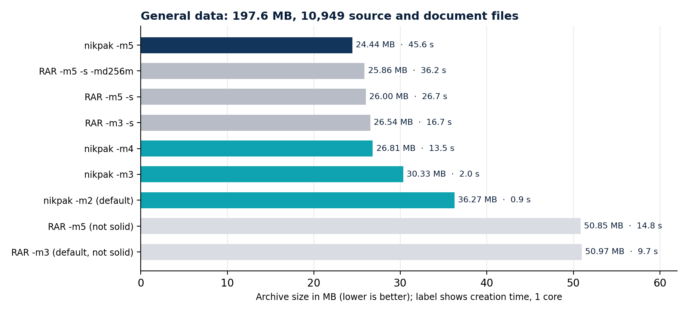
قراءة الجدول بصدق:
- المستوى الأقصى: ينتج nikpak أرشيفاً أصغر بنسبة 5.5 % من أفضل ما ينتجه RAR (24.4 مقابل 25.9 MB). ويكون RAR أسرع عند هذا المستوى (26.7 إلى 36.2 ثانية مقابل 45.6 ثانية).
- تساوي الحجم: يكون
nikpak -m4ضمن نحو 1 % من مستوى RAR الافتراضي solid في 81 % من الوقت (13.5 ثانية مقابل 16.7 ثانية). - المستويات السريعة: يقايض
-m2النسبة بالسرعة: أسرع 18 مرة من RAR solid-m3، وأكبر بنسبة 37 %. هذا هو المستوى المناسب للنسخ الاحتياطية وخطوط الأنابيب حيث يكون الوقت أهم من آخر بضعة ميغابايتات. - غير solid: تكون أرشيفات RAR الافتراضية (غير solid) ضعف حجم أرشيفاته solid تقريباً على بيانات كثيرة الملفات الصغيرة هذه. على من يقارن nikpak بـRAR أن يضيف
-sإلى RAR.
11.4 السرعة على ملف وسائط كبير واحد
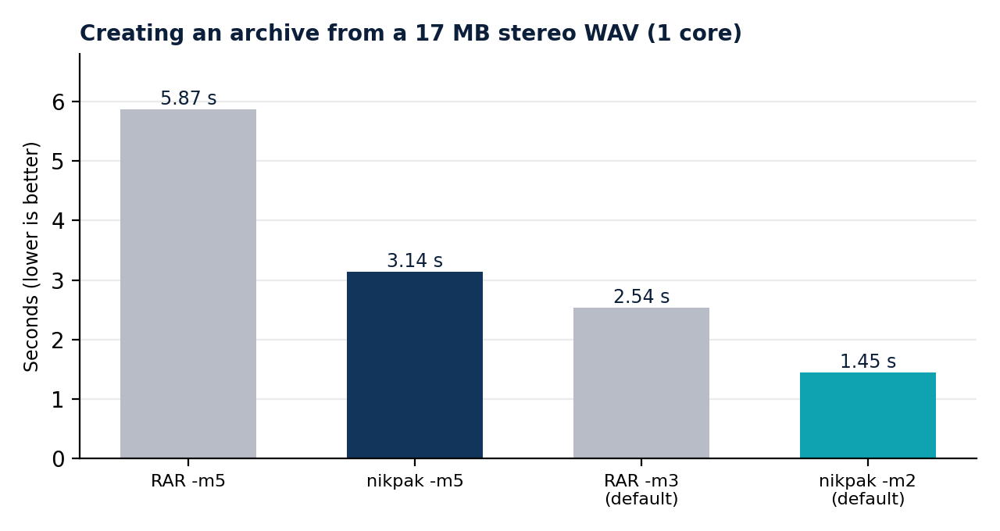
| العملية | nikpak | RAR 7 | الحجم |
|---|---|---|---|
| الإنشاء، السريع / افتراضي RAR | 1.45 s (-m2) | 2.54 s (-m3) | 9,415,519 vs 11,128,595 |
| الإنشاء، المستوى الأقصى | 3.14 s (-m5) | 5.87 s (-m5) | 9,411,898 vs 11,024,411 |
| الاستخراج | 0.28 s | 0.23 s | المخرج نفسه |
على الوسائط يكون nikpak أصغر وأسرع في الإنشاء. يستخرج RAR أسرع قليلاً؛ والسبب المحتمل هو أن فك ترميز NAC ينفذ تنبؤاً صحيحاً لكل عينة، وهو ما يكلف أكثر قليلاً من نسخ المطابقة الذي يهيمن على فك الترميز العام.
11.5 تكلفة التشفير
على مجموعة بيانات 222 MB، استغرق الأرشيف المشفر 0.92 ثانية مقابل 0.64 ثانية غير مشفر، وكان أكبر بـ11,087 بايتاً (0.03 %). يشمل الفرق اشتقاق Argon2id، لذا تهيمن على الكلفة نسبة ثابتة من الثانية.
11.6 إعادة إنتاج النتائج
# media: which filter wins, per file
nikpak mt song.wav tracker.mod photo.bmp
# archive with nikpak and RAR, then compare
nikpak a -q -ep -m2 test.nik *.wav
rar a -ep -m5 -ma5 test.rar *.wav
# fair comparison on many files: give RAR solid mode
rar a -r -s -m5 -ma5 -md256m data.rar data
nikpak a -m5 data.nik data
# verify
nikpak x -o+ test.nik restore\
11.7 الجولة الثانية: nikpak وRAR 7 و7-Zip وZIP
محدَّث لإصدار nikpak 1.2.0. في النسخة الأولى من هذه الجولة، مع nikpak 1.1.0، كان 7-Zip -mx9 متقدماً في النصوص (بنسبة 1.4 %)، وملفات Office (بنسبة 3.3 %)، والكود المصدري (بنسبة 8.5 %). يضيف nikpak 1.2.0 إعادة ضغط Deflate (7.9) ومستوى أقصى جديداً مبنياً على LZMA2 وPPMd (6.7)، وقيس مرة أخرى على الجهاز نفسه بالملفات نفسها. أرقام RAR و7-Zip وZIP مأخوذة من الجولة الأولى.
تقارن الأقسام من 11.2 إلى 11.5 nikpak بـRAR فقط. تضيف هذه الجولة الثانية الأرشيفيين اللذين يملكهما معظم الناس بالفعل، 7-Zip وصيغة ZIP الكلاسيكية، ونوعين من الملفات التي تُؤرشَف كل يوم: النص الصريح ومستندات Office (.doc و.docx و.xls و.xlsx و.csv و.pdf). شُغِّلت الأدوات الأربع واحدة تلو الأخرى على الجهاز نفسه والملفات نفسها، وقيس RAR مرة أخرى. أُعيد بناء مجموعات البيانات من المصادر العامة نفسها، لذا تختلف الأحجام والأوقات المطلقة عن تلك الموجودة في 11.2 إلى 11.4. قارن الأرقام داخل هذا القسم، لا عبر الأقسام.
الطريقة
| البند | التفصيل |
|---|---|
| الجهاز | آلة افتراضية Linux x86-64 (Intel Xeon بتردد 2.8 GHz). ثُبّت كل أمر على نواة معالج واحدة باستخدام taskset وشُغِّل بخيط واحد (nikpak -mt1 وRAR -mt1 و7-Zip -mmt=1؛ وZIP أحادي الخيط بالتصميم). |
| البرمجيات | nikpak 1.2.0 (بناء release)؛ وRAR 7.00 (-ma5، وsolid)؛ و7-Zip 23.01 (صيغة .7z، وLZMA2، وsolid افتراضياً)؛ وInfo-ZIP Zip 3.0 وUnZip 6.0 (Deflate). |
| المستويات | nikpak: المستوى السريع -m2 والأقصى -m5، وهو الافتراضي منذ الإصدار 1.2.1 (و-m4). الآخرون: الافتراضي والأقصى، وRAR -m3 -s / -m5 -s، و7-Zip -mx5 / -mx9، وZIP -6 / -9. أُعطي RAR الوضع solid (-s)، لأن الثلاثة الآخرين solid، أو لا يمكنهم ذلك في حالة ZIP. |
| قياس الوقت | ثواني ساعة الحائط. المجموعات الأقل من 50 MB: أفضل ثلاث تشغيلات. المجموعة العامة: تشغيلة واحدة. |
| التحقق | استُخرجت جميع الأرشيفات الـ92 وقورنت بالأصل باستخدام diff -r. وكانت جميعها متطابقة. |
مادة الاختبار
| المجموعة | الملفات | الحجم (بايت) | المحتوى |
|---|---|---|---|
| صور BMP | 8 | 6,987,840 | ست صور فوتوغرافية من مجموعة عينات scikit-image بصيغة BMP 24 بتاً، إضافة إلى صورة فوتوغرافية رمادية 8 بتات وخامة حصى 8 بتات. |
| ProTracker MOD | 16 | 2,252,604 | أكبر 16 وحدة ProTracker في مجموعة اختبار libxmp. |
| ملفات WAV الخاصة بالمعرض | 35 | 2,991,820 | أصوات معرض LibreOffice الـ35 نفسها كما في 11.1. |
| الموسيقى، أربع صيغ | 4 × 1 | 53,417,226 | مقطوعة جديدة مدتها 100 ثانية (بيانو وأوتار وباس وفلوت وطبول) مُصيَّرة بـTiMidity++ وFreepats بتردد 44.1 kHz ستيريو 16 بتاً، ثم حوّلها SoX إلى أحادي 16 بتاً و8 بتات بتردد 22.05 kHz وإلى ستيريو 24 بتاً بتردد 48 kHz. |
| النص الصريح | 18 | 11,793,318 | ثمانية عشر كتاباً من مشروع Gutenberg بصيغة .txt (أوستن وملفيل وشكسبير ونسخة الملك جيمس للكتاب المقدس وغيرها). |
| ملفات Office | 60 | 39,100,915 | 12 تقريراً بصيغة .docx و.doc و.pdf (نص وعناوين وجداول وبعض الصور) و8 دفاتر مبيعات تضم من 500 إلى 30,000 صف بصيغة .xlsx و.xls و.csv (مع صيغ)، حُفظت بـLibreOffice. |
| البيانات العامة | 11,473 | 190,454,632 | مكتبات Python 3.12 و3.13 القياسية، وحزم Debian Python، وترويسات C (/usr/include)، و/usr/share/doc. مع إزالة الروابط الرمزية. |
المستويات القصوى: حجم الأرشيف
| المجموعة | الأصل | nikpak -m5 | RAR 7 -m5 | 7-Zip -mx9 | ZIP -9 |
|---|---|---|---|---|---|
| 8 صور BMP | 6,987,840 | 3,557,350 | 4,394,310 | 4,195,043 | 4,974,680 |
| 16 ملف ProTracker MOD | 2,252,604 | 1,127,607 | 1,264,245 | 1,166,855 | 1,408,085 |
| 35 ملف WAV من المعرض (أحادي 16 بتاً) | 2,991,820 | 1,346,484 | 1,596,971 | 1,484,879 | 1,852,279 |
| موسيقى 44.1 kHz ستيريو 16 بتاً | 17,760,408 | 8,731,989 | 10,460,042 | 10,666,922 | 15,225,764 |
| موسيقى 22.05 kHz أحادي 16 بتاً | 4,440,136 | 2,458,867 | 2,797,026 | 2,784,080 | 3,736,722 |
| موسيقى 22.05 kHz أحادي 8 بتات | 2,220,090 | 606,840 | 725,416 | 642,341 | 836,989 |
| موسيقى 48 kHz ستيريو 24 بتاً | 28,996,592 | 18,198,056 | 21,229,465 | 25,542,036 | 26,980,770 |
| 18 كتاباً نصياً صريحاً (.txt) | 11,793,318 | 2,741,898 | 3,519,622 | 3,259,868 | 4,223,579 |
| 60 ملف Office | 39,100,915 | 6,887,729 | 11,186,217 | 10,085,779 | 17,399,998 |
| البيانات العامة (11,473 ملفاً) | 190,454,632 | 28,175,618 | 33,606,893 | 28,879,398 | 62,198,510 |
جميع الأحجام بالبايتات. ويُعرض أصغر أرشيف في كل صف بخط عريض.
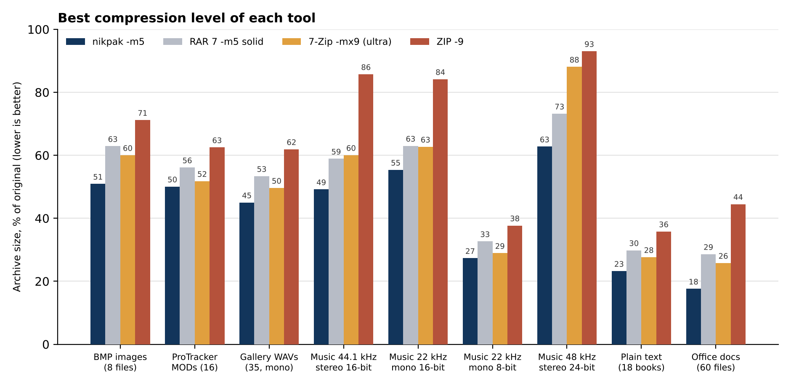
المستويات السريعة: الحجم ووقت الإنشاء
| المجموعة | nikpak -m2 | RAR 7 -m3 | 7-Zip -mx5 | ZIP -6 |
|---|---|---|---|---|
| 8 صور BMP | 54.0 % · 0.39 s | 63.0 % · 2.09 s | 60.1 % · 3.51 s | 71.2 % · 0.35 s |
| 16 ملف ProTracker MOD | 52.4 % · 0.61 s | 56.2 % · 0.43 s | 51.9 % · 0.69 s | 62.7 % · 0.10 s |
| 35 ملف WAV من المعرض (أحادي 16 بتاً) | 51.1 % · 0.41 s | 53.6 % · 0.71 s | 49.6 % · 1.96 s | 61.9 % · 0.24 s |
| موسيقى 44.1 kHz ستيريو 16 بتاً | 49.2 % · 1.72 s | 59.9 % · 3.60 s | 60.1 % · 14.03 s | 85.7 % · 0.82 s |
| موسيقى 22.05 kHz أحادي 16 بتاً | 55.4 % · 0.58 s | 64.1 % · 0.95 s | 62.7 % · 2.14 s | 84.2 % · 0.22 s |
| موسيقى 22.05 kHz أحادي 8 بتات | 27.4 % · 0.77 s | 33.3 % · 0.52 s | 28.9 % · 2.13 s | 38.2 % · 0.32 s |
| موسيقى 48 kHz ستيريو 24 بتاً | 62.8 % · 2.06 s | 73.6 % · 7.54 s | 88.1 % · 13.54 s | 93.0 % · 1.19 s |
| 18 كتاباً نصياً صريحاً (.txt) | 35.2 % · 0.11 s | 30.4 % · 5.53 s | 27.7 % · 11.76 s | 36.0 % · 0.89 s |
| 60 ملف Office | 38.0 % · 0.22 s | 29.5 % · 8.25 s | 26.2 % · 21.85 s | 44.7 % · 1.83 s |
| البيانات العامة (11,473 ملفاً) | 25.3 % · 1.67 s | 18.0 % · 48.19 s | 17.0 % · 93.71 s | 32.9 % · 7.32 s |
nikpak -m2 مقابل المستوى الافتراضي للأدوات الأخرى. تعرض كل خلية حجم الأرشيف كنسبة مئوية من الأصل ووقت الإنشاء على نواة واحدة. وأصغر أرشيف في كل صف بخط عريض.
البيانات العامة بالتفصيل
| الأداة والمستوى | الحجم (بايت) | % من الأصل | الإنشاء | الاستخراج |
|---|---|---|---|---|
| nikpak -m5 | 28,175,618 | 14.8 % | 154.3 s | 5.6 s |
| 7-Zip -mx9 | 28,879,398 | 15.2 % | 120.9 s | 6.0 s |
| RAR 7 -m5 -s -md256m | 32,350,575 | 17.0 % | 73.6 s | 7.0 s |
| 7-Zip -mx5 | 32,375,802 | 17.0 % | 93.7 s | 4.5 s |
| nikpak -m4 | 33,295,133 | 17.5 % | 37.8 s | 3.3 s |
| RAR 7 -m5 -s | 33,606,893 | 17.6 % | 72.4 s | 6.7 s |
| RAR 7 -m3 -s | 34,236,198 | 18.0 % | 48.2 s | 5.9 s |
| nikpak -m2 | 48,229,284 | 25.3 % | 1.7 s | 0.9 s |
| RAR 7 -m3 (غير solid) | 56,038,351 | 29.4 % | 20.2 s | 6.9 s |
| ZIP -9 | 62,198,510 | 32.7 % | 28.2 s | 6.9 s |
| ZIP -6 | 62,672,415 | 32.9 % | 7.3 s | 5.4 s |
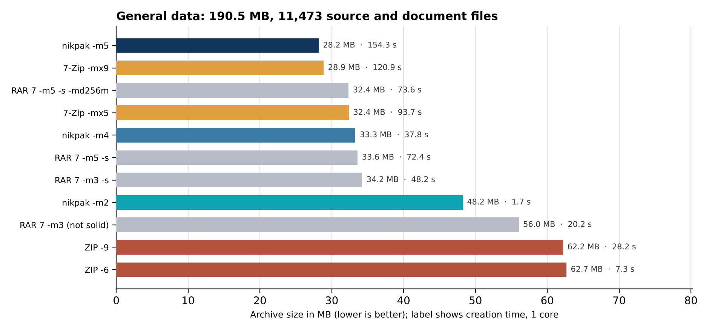
من 1.1.0 إلى 1.2.0
| المجموعة | nikpak 1.1.0 -m5 | nikpak 1.2.0 -m5 | 7-Zip -mx9 | 1.2.0 مقابل 7-Zip |
|---|---|---|---|---|
| 18 كتاباً نصياً صريحاً | 3,306,819 | 2,741,898 | 3,259,868 | أصغر بنسبة 15.9 % |
| 60 ملف Office | 10,417,750 | 6,887,729 | 10,085,779 | أصغر بنسبة 31.7 % |
| البيانات العامة | 31,322,041 | 28,175,618 | 28,879,398 | أصغر بنسبة 2.4 % |
قراءة النتائج بصدق
- nikpak -m5 هو الأصغر في كل مجموعة. مقابل 7-Zip -mx9 يكون أصغر بنسبة 2.4 إلى 31.7 %، ومقابل RAR 7 -m5 بنسبة 10.8 إلى 38.4 %، ومقابل ZIP -9 بنسبة 19.9 إلى 60.4 %. في الصوت المسجَّل يتنبأ NAC بما لا تستطيع الضواغط القائمة على LZ إلا مطابقته: في موسيقى 24 بتاً يوفر 7-Zip نسبة 12 % وnikpak نسبة 37 %.
- ملفات Office: أصغر بنسبة 31.7 % من 7-Zip. تحوِّل إعادة ضغط Deflate مساحة 6.6 MB من .xlsx و1.9 MB من .docx إلى XML صريح يضغطه LZMA2 أفضل بكثير مما فعل Deflate (6.89 MB مقابل 10.09 MB). حتى -m4 أصغر بنسبة 1.3 % من 7-Zip -mx9 وأسرع (16 ثانية مقابل 26 ثانية). والثمن عند -m5 هو الوقت: 81 ثانية مقابل 26 ثانية.
- النصوص: أصغر بنسبة 15.9 %، في نصف الوقت. يفوز PPMd في النثر (6.4 ثانية مقابل 12.9 ثانية للإنشاء). ولأن PPMd يفك الترميز ببطء يساوي بطء ترميزه، يستغرق الاستخراج 2.7 ثانية بدلاً من 0.2 ثانية.
- الكود المصدري: أصغر بنسبة 2.4 %، تقدم ضئيل. 28.2 MB مقابل 28.9 MB، في 154 ثانية مقابل 121 ثانية. صنع الفرقُ الترتيبَ حسب نوع الملف واختيار المحرك على عينات متجاورة (6.7).
- المستوى السريع -m2: الأسرع، لا الأصغر. يحتاج nikpak -m2 إلى 1.7 ثانية للمجموعة العامة، مقابل 93.7 ثانية لـ7-Zip -mx5 (أطول 56 مرة)، و48.2 ثانية لـRAR، و7.3 ثانية لـZIP. وهو أصغر من 7-Zip -mx5 في الصور وفي معظم الصوت (ملفات MOD وملفات WAV الخاصة بالمعرض أكبر بنسبة 1 إلى 3 %)، لكنه أكبر في النصوص وملفات Office والكود المصدري (49.0 % على المجموعة العامة). ولهذا السبب، يستخدم nikpak منذ الإصدار 1.2.1 الخيار -m5 افتراضياً؛ ويجب طلب -m2.
- ZIP سريع لكنه الأكبر في كل مكان. حتى nikpak -m2 يتفوق على ZIP -9 في كل مجموعة. ينشئ ZIP أرشيفات وسائط صغيرة أسرع من nikpak -m2، لأن Deflate يبذل عملاً أقل بكثير من مرمّز NAC، لكنه أبطأ في النصوص وملفات Office والكود المصدري.
- الاستخراج. تُستخرج المجموعة العامة في 0.9 ثانية (nikpak -m2) أو 5.6 ثانية (-m5)، مقابل 6.0 ثانية لـ7-Zip، و6.7 ثانية لـRAR، و6.9 ثانية لـZIP. وتُستخرج الأرشيفات ذات تدفقات Deflate المعاد ضغطها أبطأ، لأن كل تدفق يُعاد بناؤه (2.1 ثانية مقابل 0.7 ثانية لمجموعة Office).
- RAR على هذا الجهاز. كان RAR أبطأ هنا مما في 11.3 (72 ثانية بدلاً من 27 ثانية لـ-m5 -s على كمية مماثلة من الكود المصدري). يختلف الجهاز والبيانات، لذا لا ينبغي خلط القسمين. وضمن هذه الجولة توافرت الشروط نفسها لكل أداة.
ماذا يعني هذا بالنسبة لـnikpak
عند المستوى الأقصى يصنع nikpak أصغر أرشيف بين الأدوات الأربع في كل مجموعة قِيسَت، أصغر بنسبة 2.4 إلى 31.7 % من 7-Zip -mx9. التكلفة هي السرعة: يقايض -m5 الوقت بالحجم. تثبّت الأرقام أعلاه كل أداة على نواة واحدة؛ وفي الاستخدام الفعلي يوزع أرشيف -m5 كتله على الأنوية (القسم 4.5). يبقى مستوى أقصى أسرع على خارطة الطريق (القسم 15.2).
12 مقارنة nikpak وRAR
RAR أرشيفي ممتاز وواسع الاستخدام، وهذا الفصل لا يدّعي غير ذلك. يعرض حيث تفضل القياسات والتصميمُ nikpak، وأين يتقدم RAR، ومَن يجب أن يختار ماذا.
12.1 أين يتفوق nikpak
| المجال | nikpak | الدليل |
|---|---|---|
| الصوت والصور وموسيقى tracker | أصغر بنسبة 12 - 39 % من RAR 7 -m5 في كل مجموعة وسائط قيست | القسم 11.2 |
| الكود المصدري، المستوى الأقصى | أصغر بنسبة 5.5 % من أفضل إعداد solid لدى RAR | القسم 11.3 |
| السرعة عند المستوى السريع -m2 | 0.9 ثانية مقابل 9.7 - 16.7 ثانية لـ197 MB؛ و1.45 ثانية مقابل 2.54 ثانية لملف WAV | القسمان 11.3 و11.4 |
| التشفير والوضع | XChaCha20-Poly1305، موثَّق؛ ويستخدم RAR5 معيار AES-256 في وضع CBC، وهو غير موثَّق ويعتمد على مجاميع اختبارية منفصلة | الفصل 8 |
| تهشير كلمة المرور | Argon2id، مستهلك للذاكرة (64 MiB)؛ ويستخدم RAR5 معيار PBKDF2-HMAC-SHA256، المرتبط بالمعالج والذي يتوازى بثمن بخس على وحدات معالجة الرسوميات | القسم 8.2 |
| خصوصية أسماء الملفات | مشفَّرة دائماً؛ ويحتاج RAR إلى مفتاح التبديل -hp | القسم 8.4 |
| توليد كلمات المرور | مدمج: كلمة مرور عشوائية قوية عند عدم إمداد أي كلمة | القسم 3.3 |
| إثبات العبث | تُكتشف إعادة الترتيب والبتر وتغييرات الترويسة تشفيرياً | القسم 8.6 |
| الشفافية | مصدر كامل وصيغة موثَّقة؛ وتنفيذ بلغة Rust الآمنة الذاكرة | الفصلان 5 و10 |
| التوزيع | ملف تنفيذي استاتيكي واحد (نافذة إفلات وسطر أوامر؛ نحو 2.3 MB بدون النافذة)، أو مثبِّت Windows صغير؛ برنامج shareware مجاني للاستخدام الشخصي (3.8) | الفصل 13 |
12.2 أين يتقدم RAR
| المجال | RAR 7 | nikpak اليوم |
|---|---|---|
| سجلات الاسترداد | يستطيع إصلاح الأرشيفات التالفة | يكتشف التلف، ولا يستطيع إصلاحه |
| الأرشيفات متعددة الأحجام | نعم | نعم (-v، photos.nik + photos.n01 …) |
| الأرشيفات ذاتية الاستخراج | نعم | نعم (-sfx، photos.exe) |
| تحديث أرشيف | إضافة واستبدال وحذف الملفات في مكانها | الإنشاء أو الكتابة فوق فقط |
| الواجهة الرسومية | WinRAR، مع تكامل الصدفة | نافذة إفلات، ومربع استخراج للأرشيفات المُفلَتة، وقائمة مدير ملفات (3.11) |
| سرعة المستوى الأقصى | 26.7 - 36.2 ثانية على المجموعة العامة | 45.6 ثانية على نواة واحدة؛ وتُضغط الكتل بالتوازي منذ 1.13 |
| سرعة الاستخراج على الوسائط | 0.23 ثانية لملف WAV بحجم 17 MB | 0.28 s |
| النضج والانتشار | عقود من الاختبار الميداني؛ وملايين ملفات .rar الموجودة | جديد؛ بلا تدقيق مستقل؛ ويقرأ .nik فقط |
12.3 مقاومة الحوسبة الكمومية في منظورها
يشفر كل من nikpak وRAR5 بمفتاح متماثل 256 بتاً، لذا لا تمسهما خوارزمية Shor ويحتفظ كلاهما بنحو 128 بتاً من الأمان ضد خوارزمية Grover. ولا يميزهما أي ادعاء في ذلك. ما يضيفه nikpak فوق ذلك هو خطوة كلمة مرور مستهلكة للذاكرة (ما يجعل الهجوم الواقعي المهيمن، وهو تخمين كلمة المرور، أكثر كلفة بكثير) وتشفير موثَّق (ما يجعل العبث قابلاً للاكتشاف). كما صُمم منذ البداية على افتراض أن أياً من بدائيات المفاتيح العامة لن تكون جزءاً من صيغة الأرشيف أبداً، وتلتزم خارطة طريقه بمخطط هجين ما بعد الكم إذا أُضيفت مشاركة المفاتيح العامة.
12.4 أيهما تختار
- اختر nikpak لأرشفة الصوت والصور وموسيقى tracker والكود المصدري حيث يكون الحجم والسرعة مهمين، وللنسخ الاحتياطية المبرمجة، وللتشفير الافتراضي القوي، وعندما تكون الصيغة المفتوحة والموثَّقة ذات قيمة.
- اختر RAR عندما تحتاج سجلات الاسترداد أو التحديث في المكان، أو عندما يتعين عليك تبادل الأرشيفات مع أشخاص لا يملكون سوى أدوات RAR.
- استخدم الاثنين: لا شيء يمنع سير عمل من استخدام nikpak للوسائط الكبيرة والنسخ الاحتياطية المشفرة مع إبقاء RAR للتوزيع.
12.5 وماذا عن 7-Zip وZIP؟
يقيس القسم 11.7 الإصدار nikpak 1.2 مقابل 7-Zip 23.01 وInfo-ZIP 3.0 أيضاً. باختصار:
- اختر nikpak -m5 لأصغر أرشيف. إنه أصغر بنسبة 2.4 إلى 31.7 % من 7-Zip -mx9 في كل مجموعة قيست: 31.7 % في ملفات Office، و15.9 % في النصوص، و2.4 % في الكود المصدري. واختر nikpak -m2 للنسخ الاحتياطية السريعة (أسرع 56 مرة من افتراضي 7-Zip في الكود المصدري). يتمتع nikpak أيضاً بتشفير أقوى: يستخدم 7-Zip معيار AES-256 مع اشتقاق مفتاح SHA-256 غير مستهلك للذاكرة، ولا يخفي أسماء الملفات إلا بـ-mhe.
- اختر 7-Zip عندما يكون الوقت أهم عند المستوى الأقصى (فهو أسرع في مجموعات Office والكود المصدري الكبيرة)، أو عندما تحتاج مستواه الافتراضي ليكون صغيراً في المستندات، أو عندما تحتاج فتح الصيغ الكثيرة التي يقرؤها 7-Zip.
- اختر ZIP للتوافق فقط. يفتحه كل نظام تشغيل دون برامج إضافية، لكن nikpak -m5 أصغر بنسبة 19.9 إلى 60.4 %، وتشفير ZIP التقليدي ضعيف.
13 البناء والنشر والتكامل
13.1 نظام Windows مع PowerShell
كُتب nikpak بلغة Rust ويُبنى بـCargo. وعلى Windows، تحتاج Rust إلى رابط C/C++، يأتي من Visual Studio Build Tools. في PowerShell بصلاحيات مسؤول، ثبِّت الاثنين مرة واحدة ثم أعد فتح PowerShell:
winget install Rustlang.Rustup
$o = '--wait --passive --add Microsoft.VisualStudio.Workload.VCTools'
$o += ' --includeRecommended'
winget install Microsoft.VisualStudio.2022.BuildTools --override $o
إذا لم يكن winget متاحاً، ثبِّت Rust من rustup.rs وأدوات Build Tools for Visual Studio مع عبء العمل Desktop development with C++. ثم، في المجلد الذي يحتوي المصادر:
.\build.ps1 # builds dist\nikpak.exe and dist\unNik.exe
.\build.ps1 -Test # runs the unit tests first
# if PowerShell refuses to run scripts:
powershell -ExecutionPolicy Bypass -File .\build.ps1
يتحقق build.ps1 من تثبيت Cargo (ويشرح كيفية تثبيته إن لم يكن)، ويشغِّل البناء، ويشرح السبب المعتاد عند الفشل، وينسخ الملف التنفيذي إلى dist\nikpak.exe.
مثبِّت Windows
يبني .\build.ps1 -Installer (أو npm run installer) أيضاً برنامج الإعداد dist\nikpak--setup.exe باستخدام Inno Setup 6.3 أو أحدث (ثبِّته مرة واحدة بـwinget install JRSoftware.InnoSetup). والسكربت هو installer\nikpak.iss؛ ويؤخذ الإصدار من Cargo.toml. ملف الإعداد هذا هو ما يُرفع إلى مواقع shareware والتنزيل.
- افتراضياً يثبِّت للمستخدم الحالي فقط، دون صلاحيات مسؤول أو مطالبة UAC، في %LOCALAPPDATA%\Programs\NikPak. وتعرض صفحته الأولى خيار "install for all users" (مجلد Program Files، ويتطلب صلاحيات مسؤول).
- يعرض LICENSE.txt للموافقة ويثبِّت nikpak.exe وunNik.exe والأيقونات وLICENSE.txt وTHIRD-PARTY-NOTICES.txt وCHANGELOG.md. ويضيف عنصراً في قائمة Start، وأيقونة سطح مكتب اختيارية، وعند الطلب يضيف المجلد إلى PATH لسطر الأوامر. ويسجِّل أداة إزالة تثبيت في Settings > Apps.
- الاختصارات: NikPak وunNik والترخيص في قائمة Start؛ وNikPak على سطح المكتب (دائماً) وunNik على سطح المكتب كخيار.
- تُسجَّل ملفات .nik دائماً (منذ الإصدار 1.5.2): تحصل على أيقونتها الخاصة (nikfile.ico، صفحة بسحّاب، مثل ملفات .zip)، واسم النوع "NikPak archive"، ويفتحها النقر المزدوج في unNik ("Open with unNik" في قائمة النقر الأيمن). ويُدرج unNik أيضاً في "Open with" وفي التطبيقات الافتراضية (Default apps). وتزيل أداة إزالة التثبيت التسجيل. إذا كانت ملفات .nik مضبوطة مسبقاً للفتح ببرنامج آخر، يُبقي Windows ذلك الاختيار حتى يُختار unNik مرة في "Open with".
- يشغِّل "Launch NikPak" الأخير برنامج NikPak كمستخدم عادي، وليس كمسؤول أبداً، حتى يعمل السحب والإفلات. تُثبَّت التحديثات فوق الإصدار السابق (AppId ثابت). ويُحتفظ بالترخيص في %APPDATA%\nikpak عند التحديث والإزالة. ولا يحتوي برنامج الإعداد على مفاتيح أو ملفات مفاتيح أبداً.
- يعمل المثبِّت بالإنجليزية أو الفرنسية، تبعاً لـWindows. وقبل النشر، وقِّع nikpak.exe وبرنامج الإعداد بشهادة توقيع أكواد، حتى لا يحذر Windows SmartScreen من ناشر غير معروف.
يبني buildall.ps1 كل ما يُنشر في تشغيلة واحدة — nikpak.exe وunNik.exe وبرنامجي الإعداد وSHA256SUMS.txt — وينسخها إلى binaries\، ويعيد بناء موقع الويب ويرفعه عبر FTP (ويتخطى -NoUpload الرفع). ويثبِّت برنامج الإعداد الثاني، unnik--setup.exe (installer\unnik.iss)، برنامج unNik وحده، متصفح الأرشيف المجاني؛ وعندما يكون NikPak مثبتاً بالفعل يثبِّت البرنامج فقط، فلا تتكرر القوائم أبداً.
13.2 البناء باستخدام npm
لا تستخدم مشاريع Rust أداة npm، لذا لا تُطلب npm أبداً. وللتسهيل، يحتوي المشروع على package.json صغير تستدعي سكربتاته Cargo ببساطة، بحيث يستطيع المطور الذي يعيش في سير عمل Node.js كتابة أوامر مألوفة:
npm run build # cargo build --release
npm run dist # build.ps1 -> dist\nikpak.exe
npm test # cargo test --release
npm run clean # cargo clean
13.3 ملف تنفيذي قائم بذاته
يربط الملف .cargo/config.toml بيئة تشغيل C استاتيكياً لأهداف Windows MSVC. لذا لا يحتوي nikpak.exe الناتج (عدة MB مع الواجهة الرسومية، ونحو 2.3 MB بدونها) على اعتماديات DLL ولا يحتاج Visual C++ Redistributable على الأجهزة التي يعمل عليها. انسخه إلى مجلد على PATH لاستخدامه في أي مكان. يفعِّل ملف تعريف release التحسين الكامل، وتحسين وقت الربط، ووحدة توليد كود واحدة، وتجريد الرموز، وpanic = abort للحصول على ملف ثنائي صغير وسريع.
13.4 نظاما macOS وLinux
./build.sh # builds and copies the result to dist/nikpak
# or: cargo build --release
sudo cp dist/nikpak /usr/local/bin/
على macOS ثبِّت أدوات سطر الأوامر أولاً (xcode-select --install)؛ وعلى Debian أو Ubuntu ثبِّت مترجم C (sudo apt install build-essential). وتأتي Rust نفسها من curl --proto '=https' --tlsv1.2 -sSf https://sh.rustup.rs | sh. تُترجم مكتبة الضغط من مصادرها بلغة C بواسطة Cargo، لذا لا حاجة إلى مكتبة نظام.
تُصنع تنزيلات macOS وLinux للموقع بواسطة ./package-unix.sh، الذي يبني nikpak وunNik ويحزمهما مع install.sh في binaries\nikpak--macos.zip (ملف ثنائي عالمي: Intel + معالجات Apple silicon) أو binaries\nikpak--linux-.tar.gz. عيّن ZIG=1 على Linux للبناء بـcargo-zigbuild مقابل glibc 2.28، حتى تعمل البرامج أيضاً على التوزيعات الأقدم.
13.5 الاعتماديات
منذ الإصدار 1.2 يحتاج nikpak إلى Rust 1.89 أو أحدث. يفحص build.ps1 وbuild.sh الإصدار المثبت ويشغِّلان rustup update stable عندما يكون أقدم. ومع npm، شغِّل rustup update مرة قبل npm run build.
يعتمد nikpak على مجموعة صغيرة من الحزم (crates) الناضجة. تُثبَّت إصداراتها الدقيقة في Cargo.lock، وهو جزء من حزمة المصدر، لذا يستخدم كل بناء الكود نفسه.
| الحزمة (Crate) | الغرض |
|---|---|
zstd | ضغط Zstandard، مع تعدد الخيوط |
chacha20poly1305 | XChaCha20-Poly1305 وبنية STREAM (RustCrypto) |
argon2 | اشتقاق مفتاح Argon2id (RustCrypto) |
rand | الوصول إلى المولِّد العشوائي الآمن في نظام التشغيل |
zeroize | مسح المفاتيح وكلمات المرور من الذاكرة |
rpassword | قراءة كلمة مرور دون إظهارها، على كل منصة |
crc32fast | حساب CRC32 سريع |
glob | توسيع أحرف البدل (لا يوسِّع PowerShell أحرف البدل للبرامج الأصلية) |
liblzma | محرك LZMA2 لـ-m5 (liblzma، مترجم استاتيكياً من مصادر C) |
ppmd-rust | محرك PPMd variant I للنصوص عند -m5 |
preflate-rs | إعادة ضغط Deflate مطابقة بتاً ببت (Microsoft، ترخيص Apache-2.0)؛ نسخة مُضمَّنة في vendor/preflate-rs استُبدل مشفِّر الإنتروبيا LGPL (cabac) فيها بمشفِّر النطاق الخاص بـnikpak، لذا لا يحتوي nikpak على كود LGPL. يتطلب Rust 1.89 أو أحدث |
eframe / egui | الواجهة الرسومية (خاصية cargo اختيارية باسم gui، مفعَّلة افتراضياً) |
rfd | مربع حوار مجلدات أصلي لزر Browse |
ed25519-dalek | التحقق من توقيعات مفتاح الترخيص (القسم 3.8) |
rustybuzz, unicode-bidi | تشكيل وترتيب من اليمين إلى اليسار للهندية والبنغالية والعربية في النافذة (خاصية cargo اختيارية باسم gui) |
13.6 البرمجة النصية
تجعل أكواد الخروج القابلة للتنبؤ وكلمة المرور عبر متغير البيئة nikpak سهل البرمجة النصية. نسخة احتياطية بـPowerShell تعتبر التحذيرات مقبولة وأي شيء أسوأ فشلاً:
$archive = "D:\Backups\docs-$(Get-Date -Format yyyy-MM-dd).nik"
# the password comes from a file or secret store, not from the script
$env:NIKPAK_PASSWORD = Get-Content "$env:USERPROFILE\.nikpak-secret"
nikpak a -p -m3 -inul $archive "$env:USERPROFILE\Documents"
if ($LASTEXITCODE -gt 1) { throw "nikpak failed: $LASTEXITCODE" }
nikpak t -inul $archive # verify what was written
if ($LASTEXITCODE -ne 0) { throw "archive verification failed" }
الشيء نفسه في سكربت shell، باستخدام أمر القائمة المجرَّدة لتغذية أدوات أخرى:
export NIKPAK_PASSWORD="$(cat ~/.nikpak-secret)"
nikpak a -p -m3 -inul "backup-$(date +%F).nik" ~/Documents || [ $? -eq 1 ]
nikpak lb backup-2026-10-16.nik | grep -i '\.wav$'
13.7 Total Commander
يعتمد التكامل الموصوف في القسم 3.6 على اتباع nikpak لصياغة RAR. قائمة تحقق قصيرة: سجِّل الامتداد nik؛ واستخدم a للضغط وx لفك الضغط؛ ودع الواجهة الأمامية تمرر @listfile لقوائم الملفات الطويلة؛ وأعطِ -o+ أو -y للاستخراج دون تدخل؛ ومرِّر كلمة المرور بـ-p أو متغير NIKPAK_PASSWORD، لأن الواجهة الرسومية الأمامية لا تملك طرفية للمطالبة.
14 الاختبار والتحقق
لأن الأرشيفي يحمل بيانات الناس، يُختبر nikpak على أربعة مستويات.
14.1 اختبارات الوحدة
خمسة وسبعون اختبارًا آليًا يعمل بالأمر cargo test --release:
| المجال | ما يُفحص |
|---|---|
| تيار التشفير | رحلات ذهاب وإياب عند 0 و1 و100 و65,535 و65,536 و65,537 و131,072 و131,077 و327,803 بايتاً (حول حدود مقاطع 64 KiB)؛ ويجب أن يفشل كل من الترويسة الخاطئة (البيانات المرتبطة) والمفتاح الخاطئ والبتر. |
| حدود اشتقاق المفتاح | تُرفض معاملات Argon2id العدائية (ذاكرة ضخمة، صفر تمريرات، صفر حارات، تمريرات مفرطة). |
| مرمّز NAC الصوتي | رحلة ذهاب وإياب بلا فقدان لصوت 8/16/24/32 بتاً، و1 و2 و3 و6 قنوات، وتسعة أنواع إشارات (الصمت، وجيب جيبي مشوش، وضوضاء بيضاء، وموجة مربعة بكامل السعة، ومنحدر، ونبضة واحدة، وثابت أقصى، وبتات منخفضة مهدرة، وثابت أدنى)، وثمانية أطوال كتل من 1 إلى 5000 عينة، وثلاثة مستويات جهد، وترميز حرفي مجبَر. |
| طرق الصوت | NAC وShuffle وShuffle+Delta عبر جميع أعماق البتات وأعداد القنوات وترتيبات البايتات وأنواع الإشارة، بما في ذلك الكتل التي لا تنقسم بالتساوي. |
| الاكتشاف والملفات | WAV (أحادي وستيريو و8/16/24/32 بتاً وقابل للتمديد وست قنوات ومقاطع لاحقة وبايتات متبقية فردية وطول بيانات صفري ومبالغ فيه)، وAIFF، وMOD (والمبتور أيضاً)، وBMP (8/24/32 بتاً وحشو الصفوف والبيانات اللاحقة)؛ ويجب عدم اكتشاف WAV بالفاصلة العائمة والملفات الصغيرة والنصوص؛ ويقوم كل ملف برحلة ذهاب وإياب عبر كل مرشِّح ينطبق. |
| المتانة | آلاف الكتل العشوائية وذات البتات المقلوبة تُغذَّى إلى مفكِّك الصوت ومفكِّك الوسائط: يجب أن تعيد أخطاء، ولا تهلع أو تستنزف الذاكرة أبداً. |
| التأطير والمساعدات | تأطير المقاطع مع البيانات اللاحقة، وتنظيف المسارات، ومطابقة أحرف البدل والمرشِّحات، وتنسيق التاريخ، وتوليد كلمات المرور. |
| إعادة ضغط Deflate | حاويات ZIP عند مستويات Deflate 1 و3 و6 و9، وPDF بتياري zlib، وgzip بثلاثة أعضاء، وغير الحاويات؛ ويجب أن يفشل 400 تدفق معاد الضغط تالف أو مبتور بشكل نظيف (تُلتقط حالات هلع preflate). |
| الكتل متعددة المحركات | رحلات ذهاب وإياب عبر كتل zstd وLZMA2 وPPMd حول حدود إطار 256 KiB؛ و300 جسم تالف أو مبتور؛ ومعاملات محرك عدائية؛ وتجربة PPMd/LZMA2. |
| الواجهة الرسومية | التشغيل على شاشة افتراضية (Xvfb): فحص شاشات الخمول والتمرير والتقدم والإتمام بصرياً؛ وأرشفة مجلد مُفلَت واستخراجه بايتاً ببايت؛ وعدم ترك Cancel والإغلاق أثناء الضغط لأي ملف خلفهما؛ والعودة إلى نص الاستخدام عند غياب الشاشة. |
| الترخيص | المفاتيح المصنوعة بـnikpak-keygen وبأدوات PHP متطابقة ومقبولة؛ ويُرفض الاسم أو البريد الإلكتروني أو النوع أو المفتاح المغيّر، والمفاتيح الموقعة بمفتاح آخر. وعلى شاشة افتراضية: التذكير بترتيبي الأزرار، وخطأ المفتاح الخاطئ، والتسجيل الناجح، وإعادة التشغيل دون تذكير؛ ويبقى النص داخل المربعات. |
| اللغات | تترجم كل لغة كل نص بنفس العناصر النائبة؛ وتُشكَّل علامات الحركات الديفاناغارية واتصال الحروف العربية؛ وعلى شاشة افتراضية فُحصت اللغات العشر كلها شاشة بشاشة (التذكير، والخمول، والتقدم، والإتمام، وAbout، والتسجيل، وقائمة اللغة)؛ واختيار لغة يحفظها ويعيد تشغيل nikpak بها. |
| واجهة برمجة الأرشيف (API) | قراءة الفهرس، واستخراج ملف واحد من داخل مجلد (يصل بدون مسار المجلد)، وحذف مجلد بمحتوياته وحذف كل شيء، لأرشيفات -m5 وzstd مع التشفير والمخزنة؛ ويُبلَّغ عن كلمة المرور الخاطئة على هذا النحو. |
| متصفح الأرشيف | بناء الشجرة بالمجلدات الضمنية، واكتشاف النص وفك ترميزه (UTF-8 وUTF-16 وWindows-1252)، والتفاف الأسطر والبحث في العارض. وعلى شاشة افتراضية: الفتح وكلمة المرور والتنقل والتحديد والبحث والعارض والاستخراج والحذف والاختبار، بعدة لغات. |
| الواجهات الجلدية وقائمة مدير الملفات | تُولَّد ملفات قوائم Linux وتُفحص؛ وأرشيف واحد لتحديد بُدئ بثلاثة برامج؛ و--add-here مع ثلاثة عناصر و--extract-here / --extract-to تحت شاشة افتراضية؛ وتطلب الأرشيفات المشفرة كلمة مرورها وتستخرج ملفات متطابقة؛ ويُترجم كل نص واجهة جديد باللغات العشر (تأكيد أن كل لغة تترجم كل نص). |
14.2 الاختبارات الشاملة
- استُخرج كل أرشيف معياري وقورن بمصدره بايتاً ببايت (SHA-256 لمجموعة 10,949 ملفاً)، على عدة مستويات.
- أُنشئ أرشيف مختلط (WAV وMOD وBMP ونص وبيانات عشوائية ومجلدات فرعية)، وعُرض واختُبر واستُخرج كاملاً، واستُخرج ملف واحد من منتصفه.
- أُنشئ الأرشيف نفسه مع التشفير، واختُبر بكلمة المرور الصحيحة والخاطئة، واستُخرج.
- فتح الإصدار 1.1 الأرشيفات التي كتبها إصدار الصيغة السابق (1.0).
- اختُبر إدخال كلمة المرور التفاعلي عبر طرفية زائفة: كلمات مرور متطابقة، وعدم تطابق، وإدخال فارغ (توليد)، وكلمات مرور صحيحة وخاطئة عند الفتح.
14.3 اختبارات الهجوم
شُغِّلت اختبارات العبث والبتر وإعادة ترتيب المقاطع والتلاعب بالترويسة والملفات المهملة وأرشيفات اختراق المسارات من القسم 10.1 ضد كل مرشح إصدار. والنتائج مبوبة في القسمين 8.6 و10.1؛ والنتيجة المتوقعة في كل حالة هي الرفض ورسالة واضحة وكود خروج غير صفري، وليس الذعر أبداً ولا كتابة خارج الوجهة أبداً.
14.4 عيوب وجدها الاختبار
حملة الاختبار هي سبب عدم وجود عدة عيوب في البرنامج المنشور. مثالان: بحث معامل Rice الذي فشل لصوت 32 بتاً وكان سيكتب كوداً بحجم عدة غيغابايتات (وجدته مصفوفة اختبارات الوحدة وأُصلح)، وفشل مجموع zstd الاختباري الذي أُبلغ عنه بكود الخروج العام 2 بدلاً من 3 (وُجد في اختبارات العبث وأُصلح). والمثال الثالث هو منهجية الاختبار المعياري نفسها: استخدمت المقارنة الأولى مع RAR افتراضيه غير solid، ما أطرى nikpak في الكود المصدري؛ وأُعيدت في الوضع solid، والنتائج في الفصل 11 هي المصححة.
15 القيود وخارطة الطريق
15.1 القيود الحالية
| القيود | التفصيل والبديل |
|---|---|
| لا سجلات استرداد | يُكتشف التلف ولا يُصلح (احتفظ بنسخة ثانية من الأرشيفات المهمة)؛ واقسم الأرشيفات الكبيرة بأداة عامة إذا لزم. |
| لا تحديث في المكان | الصيغة تدفق solid واحد. يعيد الحذف (nikpak d، أو Delete في unNik) كتابة الأرشيف؛ وإضافة ملفات إلى أرشيف موجود غير مدعومة: أنشئ أرشيفاً جديداً، أو اكتب فوقه بـ-o+. |
| الوصول المتسلسل | استخراج ملف واحد من أرشيف كبير جداً يقرأ ما يسبقه (تُتخطى عناصر الوسائط دون فك ترميزها)؛ ويتوقف unNik عن القراءة بعد آخر ملف مختار. |
| تغطية الوسائط | ملفات WAV وAIFF بصيغة PCM الصحيح، وProTracker MOD، وBMP غير المضغوط. أما WAV بالفاصلة العائمة وADPCM وXM/S3M/IT والصور المضغوطة فتُخزَّن بضغط عادي. |
| الذاكرة عند المستويات العالية | تستخدم أرشيفات -m4 و-m5 نافذة 128 MiB؛ ويتطلب فك ضغطها ذلك القدر من الذاكرة. |
| المستوى الأقصى -m5 | المستوى الأبطأ. يحتاج الإنشاء حتى نحو 1.5 GiB من الذاكرة العشوائية (ميزانية المرمّزات)؛ وتعمل الكتل بالتوازي منذ 1.13. |
| الروابط الرمزية والتواريخ | تُتخطى الروابط عند الأرشفة وتُرفض عند الاستخراج؛ وتُعرض التواريخ بالتوقيت UTC. |
| مراجعة الأمان | لم يُدقَّق تدقيقاً مستقلاً. |
| بناءات Windows وmacOS | طُوِّر واختُبر واختُبر معيارياً على Linux. رُوجعت مسارات الكود الخاصة بـWindows وmacOS يدوياً لكنها لم تُختبَر على هذين النظامين بعد: شغِّل cargo test --release هناك قبل الاعتماد على أي بناء. |
15.2 خارطة الطريق
| البند | الغرض |
|---|---|
| سجلات الاسترداد | تكافؤ Reed-Solomon بحيث يمكن إصلاح الأرشيفات التالفة، وهي الميزة الرئيسية التي يفتقدها مستخدمو RAR. |
| دعم التحديث | إضافة الملفات واستبدالها داخل أرشيف موجود. |
| مشاركة المفاتيح العامة بمخطط هجين | تشفير أرشيف بمفتاح المستلم باستخدام X25519 مدمجاً مع ML-KEM، آمن إذا صمد أي من المكونين. |
| مرشِّحات وسائط إضافية | الصوت بالفاصلة العائمة، وصيغ XM/S3M/IT trackers، وإعادة ضغط PNG، ومرشِّح ثنائي الأبعاد لـTGA وTIFF غير المضغوط. |
| قراءة ZIP وRAR، والتكامل مع الصدفة | فك ضغط الصيغ الشائعة في unNik وسحب الملفات من unNik، بحيث يمكن أن يكون nikpak الأداة الوحيدة المثبتة. (وصلت قائمتا سياق Explorer وFinder في الإصدار 1.5.5، القسم 3.11.) |
| مستوى أقصى أسرع | -m5 يوزع الكتل على الأنوية بالفعل؛ والخطوة التالية هي LZMA2/PPMd متوازيان داخل ملف واحد، وإزالة التكرار، ومرشّح للملفات التنفيذية. |
| مراجعة أمان خارجية | تدقيق مستقل للكود التشفيري والمستخرِج. |
الترخيص: NikPak برنامج shareware مغلق المصدر، © 2026 Nicolas Choukroun، من توزيع Nikkoid LLC (LICENSE.txt، القسم 3.8)؛ وunNik برنامج مجاني (القسم 3.9). وتُدرج المكونات مفتوحة المصدر التي يحتويها مع تراخيصها في THIRD-PARTY-NOTICES.txt، الذي يجب شحنه مع كل نسخة. أبقِ مفتاح الترخيص الخاص (keys/nikpak-private.key) خارج كل حزمة منشورة وخارج جذر الويب. وأبقِ Cargo.lock في المستودع حتى تكون البناءات قابلة لإعادة الإنتاج، وشغِّل cargo test --release في مهمة التكامل المستمر لكل منصة تدعمها.
أ الملحق أ: ثوابت الصيغة وحدودها
| البند | القيمة |
|---|---|
| التوقيع السحري |
89 4E 49 4B 0D 0A 1A 0A |
| إصدار الصيغة | 3 (يقبل القراء 1 و2 و3) |
| حجم الترويسة | 12 بايتاً؛ و59 بايتاً عند التشفير |
| أنواع السجلات | 0 END, 1 FILE, 2 DIR, 3 MEDIA |
| طرق الأرشيف | 0 store، و1 Zstandard، و2 كتل متعددة المحركات |
| محركات الكتل | 1 Zstandard؛ و2 LZMA2 (قاموس حتى 128 MiB مكتوب، ويُقبل 1.5 GiB)؛ و3 PPMd8 (رتبة 8، و192 MiB مكتوب؛ ورتبة 2-16، ويُقبل 1 GiB) |
| إعادة ضغط Deflate | ZIP وPDF وgzip؛ وملف حتى 512 MiB؛ ولكل تدفق حتى 512 MiB من البيانات الصريحة و64 MiB من التصحيحات |
| أقصى طول للاسم | 4096 بايتاً |
| المقطع المشفر | 64 KiB من النص الصريح + وسم 16 بايتاً، وطول u32 بترتيب big endian في المقدمة |
| Argon2id (مكتوب) | 64 MiB، و3 تمريرات، و4 حارات، وملح 16 بايتاً، ومفتاح 32 بايتاً |
| Argon2id (مقبول) | الذاكرة 8 × الحارات .. 1 GiB، والتمريرات 1 .. 64، والحارات 1 .. 64 |
| nonce التدفق | بادئة عشوائية 19 بايتاً + عداد 32 بتاً + علم أخير 1 بايت = 24 بايتاً |
| أدنى طول لكلمة المرور | 8 أحرف |
| كلمة المرور المولَّدة | 24 حرفاً، وأبجدية من 56 رمزاً، ونحو 139 بتاً |
| أدنى حجم لملف الوسائط | 8 KiB (المنطقة 4 KiB على الأقل) |
| كتلة NAC | 4096 إطار عينات؛ وكتلة Shuffle 32768 إطاراً |
| التجربة | حتى ثلاث نوافذ بحجم 768 KiB (5 % و45 % و85 %)؛ والمنطقة كاملة إذا وصلت إلى 3 MiB؛ وهامش 2 % |
| حد منطقة BMP | 256 MiB |
| نافذة Zstandard | الافتراضية؛ و2^27 مع مطابقة المسافات الطويلة عند -m4 و-m5 |
| الخيوط | 1 .. 256 (-mt) |
| علم التقسيم | البت 3 من أعلام الترويسة (FLAG_SPLIT) + حجم جزء بطول 64 بتًا بعد الغلاف |
| أسماء الأجزاء | photos.nik، photos.n01 … photos.n99، ثم .100 …؛ والجزء الممتلئ يحصل على جزء لاحق فارغ |
| التوقيع السحري لـSFX | NIKPAKSFX — اللاحقة ذات 40 بايتًا في نهاية ملف .exe ذاتي الاستخراج: التوقيع السحري والإزاحة والطول والإجمالي وCRC32 |
ب الملحق ب: المسرد
| المصطلح | المعنى |
|---|---|
| AEAD | التشفير الموثَّق مع البيانات المرتبطة: يشفِّر ويكتشف أي تعديل، بما في ذلك تعديل البيانات المرسلة صراحةً (مثل الترويسة). |
| Argon2id | دالة تهشير كلمات مرور مستهلكة للذاكرة مقننة في RFC 9106؛ تحوِّل كلمة المرور إلى مفتاح بكلفة ذاكرة عالية عمداً. |
| CRC32 | مجموع اختباري 32 بتاً يكتشف التلف العرضي. وليست ميزة أمان. |
| FSE | إنتروبيا الحالات المحدودة: مشفِّر الإنتروبيا القائم على الجداول الذي يستخدمه Zstandard. |
| خوارزمية Grover | خوارزمية بحث كمومية بتسريع تربيعي؛ تنصِّف الطول الفعال للمفاتيح المتماثلة. |
| LPC | الترميز التنبئي الخطي: التنبؤ بعينة من مجموع موزون للعينات السابقة. |
| Levinson-Durbin | استدعاء يحسب معاملات المتنبئ المثلى لكل رتبة من الارتباط الذاتي للإشارة. |
| LZMA2 | خوارزمية سلسلة Lempel-Ziv-Markov التي يستخدمها 7-Zip وxz: مطابقة LZ77 مع تحليل أمثل ومشفِّر نطاق ثنائي. |
| MED | كاشف الحواف الوسيطي: متنبئ بكسل من مرمّز الصور LOCO-I / JPEG-LS. |
| مستهلك للذاكرة | دالة تهيمن الذاكرة على كلفتها، ما يحد من التسريع المتاح من وحدات معالجة الرسوميات والشرائح المخصصة. |
| NAC | مرمّز nikpak الصوتي بلا فقدان. |
| PPMd | التنبؤ بالمطابقة الجزئية (variant I): يتنبأ بكل بايت من البايتات السابقة حتى 8 بايتات؛ قوي جداً في النصوص. |
| preflate | طريقة (ومكتبة) تحوِّل تدفق Deflate إلى بياناته الصريحة إضافة إلى تصحيحات صغيرة، يمكن إعادة بناء تدفق Deflate المطابق منها. |
| ترميز Rice | كود بسيط وسريع للأعداد ذات التوزيع الهندسي تقريباً: خارج قسمة أحادي وعدد ثابت من البتات المنخفضة. |
| خوارزمية Shor | خوارزمية كمومية تحلل الأعداد الصحيحة إلى عوامل وتحسب اللوغاريتمات المتقطعة، ما يكسر RSA وتشفير المنحنيات الإهليلجية. |
| أرشيف solid | أرشيف يُضغط كتدفق متصل واحد، بحيث يمكن استغلال التكرار بين الملفات. |
| STREAM | بنية تشفِّر رسالة طويلة كمقاطع موثَّقة مع عداد وعلم المقطع الأخير في nonce. |
| رسم الخرائط المتعرج (Zig-zag) | ربط الأعداد الصحيحة ذات الإشارة بغير الموقعة (0 و-1 و1 و-2 ... إلى 0 و1 و2 و3 ...)، بحيث تصبح المقدار الصغيرة أعداداً صغيرة. |
| Zstandard | صيغة ضغط مفتوحة حديثة تجمع بين مطابقة LZ77 وترميز إنتروبيا Huffman وFSE. |
الإصدار 1.6.2 · أكتوبر 2026 الصفحة 19